PRIMARY DEVELOPMENT · v0.5.2
Latest dimensioned candidate: approximately25.6t tare/37.6t AW3 per car. Thin return-rail saturation prevents requiredAW3 support; propulsion demagnetisation/convergence and other mandatory design gates remain open. Exact candidate, failures and detailed-system chain · Owner/builder planner · Native module and assembly visibility video
Current configuration, calculations and requirements · Sources and payload receipt · Systems responsibility register
Product, engineering, delivery and lifecycle evidence connects the equipment ledger, coupled actuator experiment, segmented launch options, full pilot-line operation, procurement/construction cash and native serial business workflow. Accounted equipment exceeds historical mass targets. Failed original removal paths, counted redesigns and unresolved design gates remain visible.
Controlled product · Actuator simulation · Launch search · Pilot access/service/finance · Resource delivery · Native lifecycle · Executed profiles · v0.4 migration
All development profiles executed against current sources: True. Mass targets closed: False. Physical and manufacturing gates remain open.
Retained rejected experiment: 120-turn coupled run, failure receipt and exact sources · matched failed-candidate costs and finance. Later candidates preserve this history.
Urban passenger stops target at least 1.5 km spacing and about 2 km on average. Suburban stops target 4–5 km with finite midway acceleration where required. Junctions are passenger transfers between independent fixed lines, without physical train-routing switches. Close retained transfers remain visible spacing/access exceptions. Straight alignments require actual land, utility, grade, clearance and evacuation checks.
Longer corridor model and limits · Separate trajectories, installed zones, services, capacity and actual Rust fault evidence · Corridor source receipt
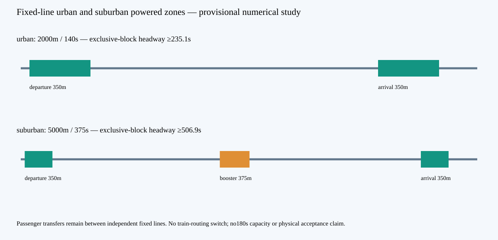
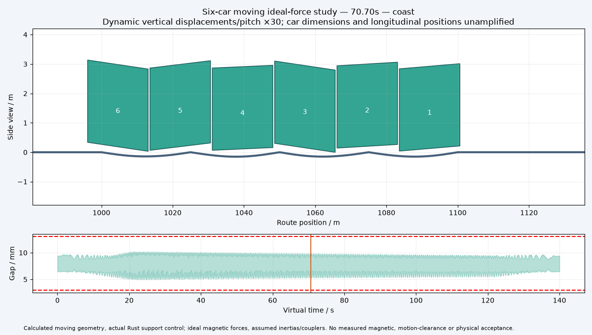
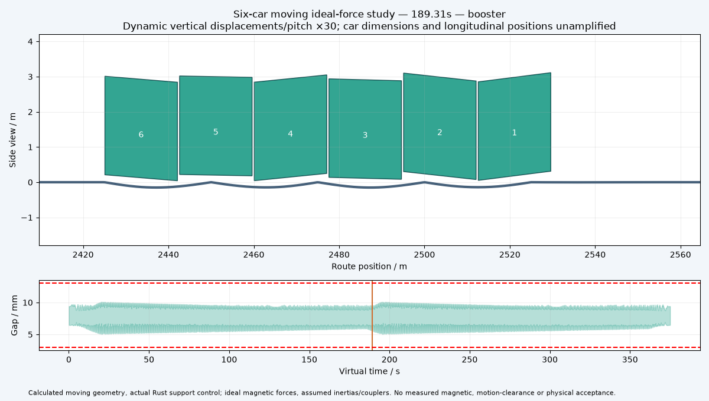
Calculated urban-profile video · Calculated suburban-profile video. These use retained numerical motion, with declared visual amplification; ideal-force and physical qualification limits remain explicit.
| Profile | Distance | Run | Services pack | Charger input | Dwell | Whole-leg headway lower bound |
|---|---|---|---|---|---|---|
| suburban | 5000 m | 375 s | 50 kWh/car | 600 kW/car | 96 s | 506.86 s; capacity hold |
| urban | 2000 m | 140 s | 50 kWh/car | 400 kW/car | 60 s | 235.14 s; capacity hold |
The 5 km/300 s AW3 faster comparison retains AW0/AW2 failures under the common speed cap. Current operating cases use 350 m station zones; midpoint booster extent is the union of all three load envelopes and is separately priced. The new longer-leg studies are separate from the retained 1 km benchmarks below. Motor overlap/current/voltage, services reserve and resource headway must pass for each exact profile. A trajectory or isolated replay does not establish sectioned multi-train protection, retained capacity, geometric confirmation or hardware qualification. City plans retain any shortfall and every unqualified operating design.
The retained flat 1000 m study uses 88 s, a 157.2 t loaded six-car train, assumed drag, 1 m/s² launch acceleration and 0.6 m/s³ jerk. Its 2.864 MW peak traction input and 6.529 kWh launch input use assumed 85% conversion. Coasting has zero commanded propulsion. Magnetic force/current/voltage/thermal maps and six-car phase registration remain open.
The supplied 90 s/0.8 m/s²/190 s case remains a separate authored benchmark, with a 1.20 MW loss-free charging requirement. The two charts below belong to that benchmark packet, rather than the updated primary run. Benchmark scope · Trajectories, overlap, gradients, power and procurement targets · Execution/source receipt
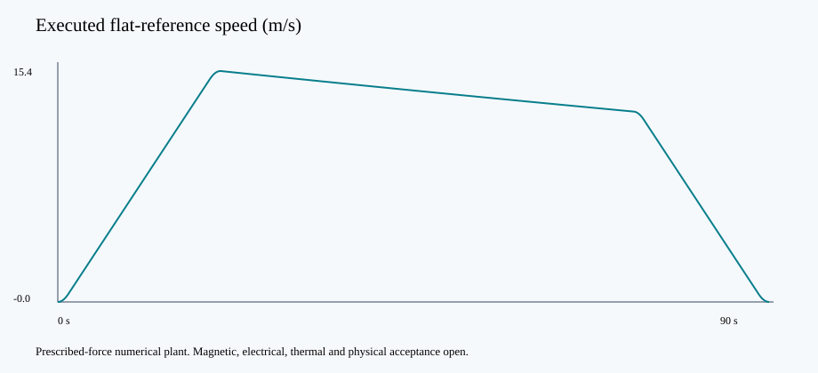
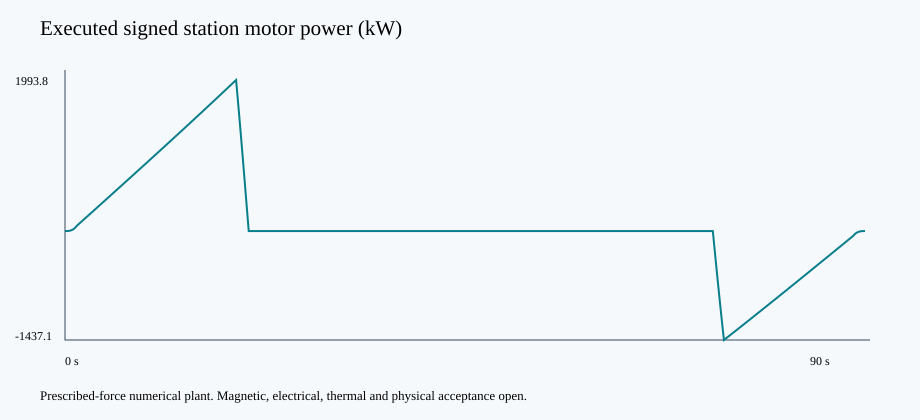
At 45 s connected charging in 60 s dwell, the current services battery supplies the 88 s run plus 15 s disconnected dwell. Replacing 10.30 kWh/train requires 1.18 MW converted output including direct connected services, or 1.316 MW source input at 90% assumed efficiency. The current candidate is 1.44 MW/train input (240 kW/car); pack charging is 4.58C. The 30 kWh/car pack retains EOL/SOC/reserve sensitivities rather than a qualified battery selection. Station resistor braking must remain available without another energy consumer.
Protected-zone planning minimum is 178.09 s; the 180 s target gives 14,400 normal passengers/hour/direction. City schedules use their actual leg/dwell bounds; selected headways and retained capacity targets are explicit, with proposed stops and terminal motor zones. Grade/speed/overlap failures, stalled-train recovery and receiver failure after launch remain explicit holds. A station cannot restart a distant stationary train without a recovery method.
The retained 30 kWh budget is14.2 t/car tare, including a5.2 t equipped body,3 t ferrite and an existing1.8 t growth reserve. The primary detail dossier uses the50 kWh reference: 14.4 t tare/26.4 t AW3 per car, with the battery increase included once. It charges 346.5 kg/car frame overrun and 207.0 kg/car exact heavier-case emergency proposal against the retained reserve, leaving 1246.5 kg/car before other growth. Four doors/car are used consistently in the configuration, panel takeoff, platform interfaces and evacuation count. Laminate/core properties, distributed hardpoints, joints, fire, crash, fatigue and complete measured mass/CG/inertia remain unqualified.
Body takeoffs, core substitutions, beam/support families and production bottlenecks · Reproducibility receipt · GFRP/civil FreeCAD · Compressed STEP · Actual native reopening/solid checks
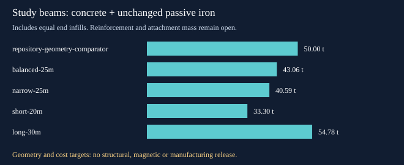
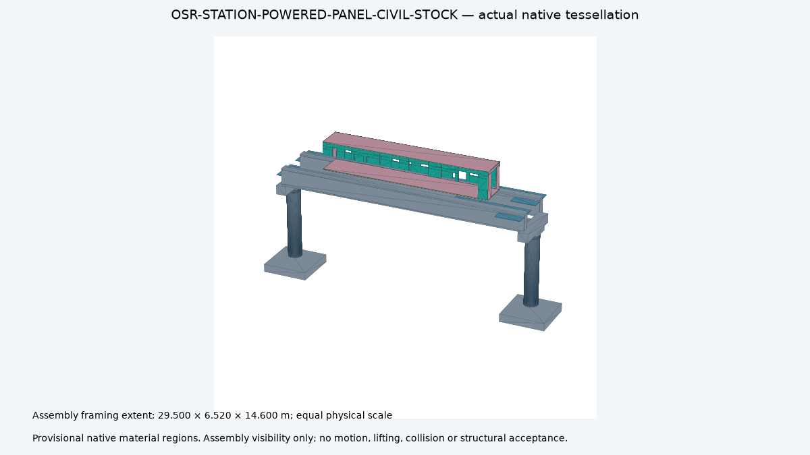
GFRP/civil assembly visibility video. Developed panel stock and material-region assemblies omit unsized detail; final-position visibility is not motion, collision, deployment or lifting simulation.
The current box uses 25 m spans and 0.80 × 2.50 m outer dimensions, 100 mm webs, 150 mm flanges and explicit end infills. The supplied 25 m × 1.80 m civil case remains a comparative quantity/cost benchmark. Hollow 1.35/0.95 m columns and 5.4 m³ caps replace placeholder solids. Shallow, shaft and pile-group foundations remain conditional on ground and loads. Thin walls need actual cover/strand/shear/connection and manufacturing detail; native geometry does not prove strength or magnetic-gap motion.
The authored document's rounded no-walkway priced-scope target is about $3.313 million/two-direction route-km. Actual native end-infill quantities are priced separately from rounded budgets. Most proposed savings come from support and production procurement targets, including $22,000/support. The 56.25 route-m/planned-workday bottleneck is an unmeasured two-shift production objective, with cure, connection, lift and survey acceptance holds. The selected deeper guidebeam, terminal civil work, station electrical equipment and conditional foundation increment require current city quantities. This benchmark is not their installed cost. Walkway deletion remains unapproved.
Moving model and limits · Actual six-car results, failed comparisons, controls and traces · Exact source/build/media receipt · Calculated moving-train video
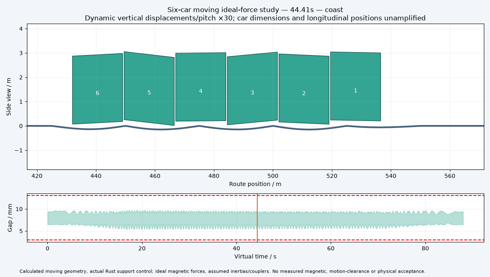
The retained component-benchmark candidate executes 17,600 actual Rust moving steps over 88 s. Six separate rigid-car states couple to repeated flexible vertical spans and a longitudinal spring/damper chain. Physical numerical gaps span 5.362–9.719 mm; peak pair force is 80.275 kN, and indexing spread is 1.747 electrical degrees. Reduced stiffness and signed sensor-bias confirmations, independent moving-load/work/refinement controls and rejected comparisons remain recorded. These are ideal-force calculations: real shared-field phase/current feasibility, normal/thrust coupling, flexible bodies, lateral/soil/contact response and physical timing remain open. The video uses recorded motion and declared vertical/pitch amplification; it is not an assembled-clearance or physical validation.
Specifications, margins and missing tests · Full manufactured design dossier · Connection material definition · Native detail FreeCAD · Native detail STEP · Actual export/reopening receipt · Detail visibility video
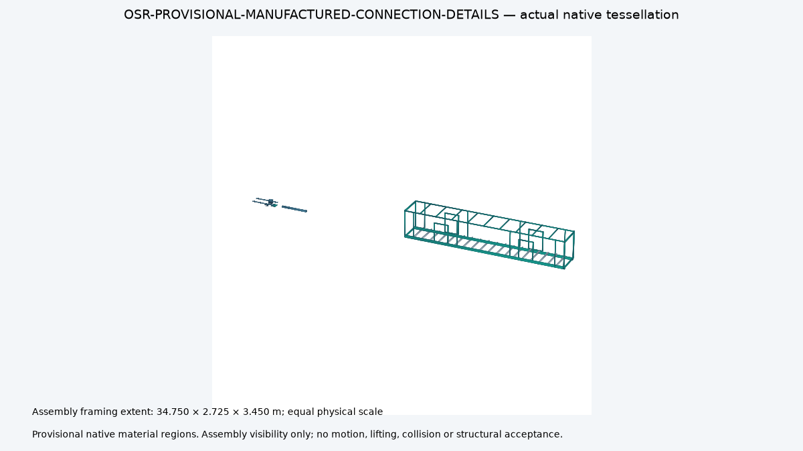
The dossier counts 63 primary/opening frame members, supported panel alternatives, local patches and joints, guided high-stiffness couplers, stator cassette mounts and fixed/guided bearings. Prestress/handling cases retain failed end details and a reduced-bond candidate. Emergency forces are allocated by actual pad positions and span anchorage, rather than an assumed percentage. The conditional footing change adds 17.6 m³ concrete per support plus separately counted reinforcement and earthworks, at an unquoted $8,911 incremental target. This is an assumed-ground proposal, not accepted foundation selection. Local clamp, bond/fastener, strand/end-zone, fatigue/crash, complete equipment and manufacturing tolerances remain qualification gates. Partial untrimmed stock geometry has no assembled interference authority.
Campaign scope · Protected resources, motor checks and emergency/recovery sizing · Actual command/input/output records · Source receipt
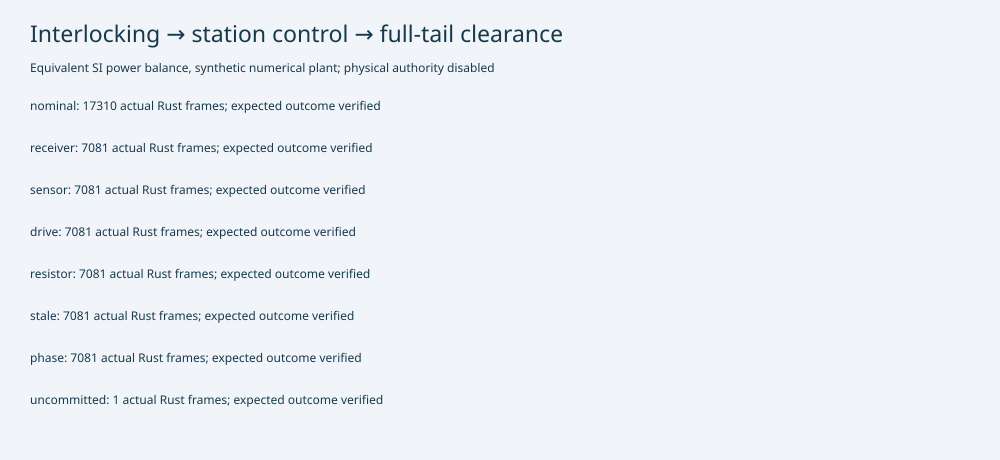
8 actual Rust cases compose protected launch/receiving ownership with incoming movement, dwell and committed departure. Receiver, sensor, drive, resistor, stale, phase and commitment negative cases preserve support and disable physical outputs. Equivalent scalar electrical constants enforce air-gap power balance without a measured motor map. Virtual detectors and one local controller do not implement cross-controller handover. Independent friction-brake and station-winch proposals expose force, delay, heat energy, clamp/load path, battery reserve, cable reach and anchors. Safe modulation, friction/fade, heat transfer, curved access and full physical stopping/recovery remain open.
Material quantities, recovery alternatives and QA · Full kit calculations · Partial kit material definition · Booster/rescue FreeCAD · Booster/rescue STEP · Actual native checks · Booster/rescue stock visibility video
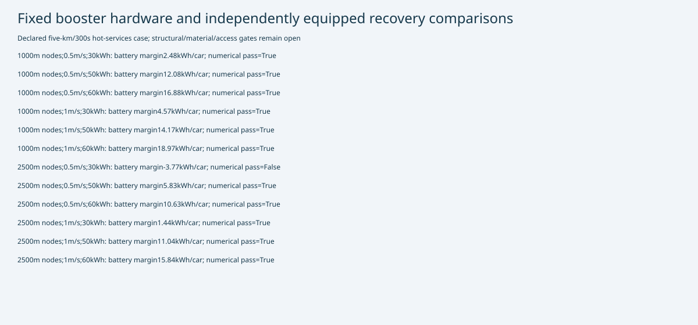
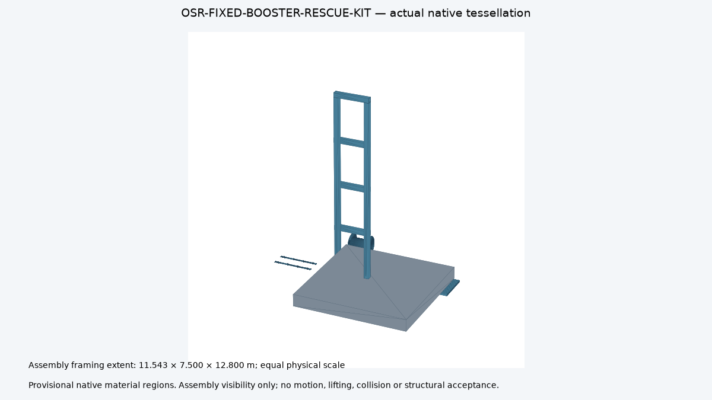
The kit counts2.5 m face cassettes,12.5 m electrical sections, mount stock/bolts, cabinets and pads separately from ordinary route civil work. Spatial fixed-bearing reactions and equivalent I²R duty are explicit interfaces; magnetic normal forces, winding/core/cooling and a qualified thermal network remain open. Recovery compares independently accessible nodes at intervals up to 1 km with midpoint-only facilities,0.5/1 m/s towing and30/50/60 kWh services packs. Rope, termination factors, annular drum/shaft, portal, anchors, conditional standalone foundation and rated drive/power targets are counted. The failing midpoint-only30 kWh slow-winch case remains recorded. Co-location with a station, booster or pier earns no automatic access, foundation or cost credit. Cable deployment, actual essential loads, certified winch/rope/brakes, ground, evacuation and physical rescue acceptance remain open. Native stock visibility is not an assembled clearance or full system demonstration.
Equal-volume conventional, segmented, finite-orientation and iron-backed seeds retain block identities and magnetization vectors. The reproduced Rehberg–Blümler ring controls establish an air-core analytical benchmark; no ring percentage is credited as railway lift or material saving. Native exposed pole area differs from the 12 m² ideal screen. Shared support/thrust, saturation, hot force/cold demagnetization, losses and real effective area require 3D calculation and rig correlation.
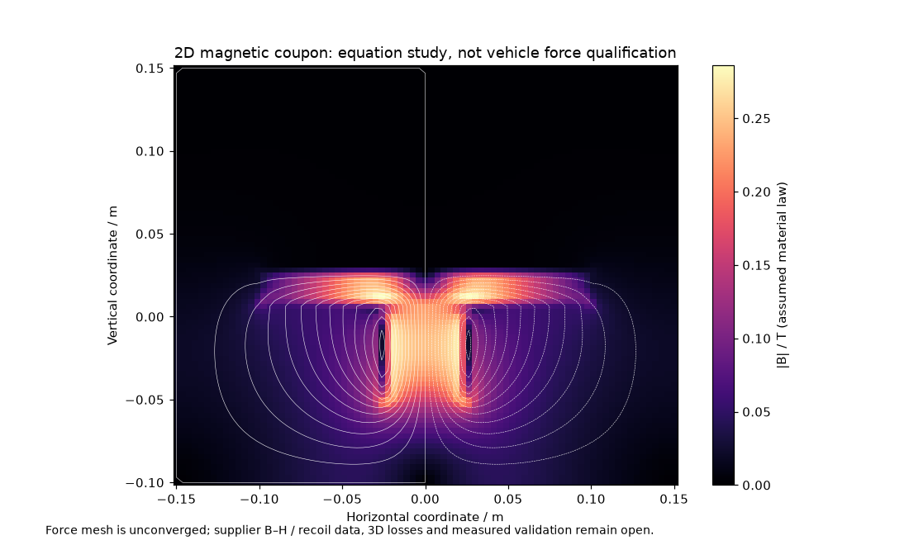
Full two-dimensional grids and numerical controls. Coupon force refinement is unconverged; no physical lift credit is allowed.
Offline tests exercise atomic corridor/receiving-berth/overlap reservation, pre-launch expiry, post-launch commitment, receiver faults, restart, replay and complete-tail-clearance requirements. Committed ownership survives permission expiry. The local conflict domain is bounded to 32 resources and one controller; this is not a distributed citywide authority. Fresh readiness/clearance inputs are synthetic assertions, not commissioned sensors. SBC supervision, deterministic MCU loops and independent trips remain separate obligations.
Actual Rust station control replay · Actual compiler/replay/protocol test commands and output · Source and execution receipt. Every physical output remains disabled. Scalar motor constants are unmeasured; no hardware timing or real current map is established.
Generation scope · Confirmed research recommendation · Variants, ancestry, actual Rust/beam traces and station confirmations. Exact candidate 18c07db343d23725c4449ae6e8f3232adc9f6b2480101e865440bd39ed9c8558 is preferred only within evaluated bounds and declared weights. Proposals vary body/equipment allocations, beam geometry, gains, runtime, winding length and acceleration; failed mandatory confirmation disqualifies the revision. Reference and city defaults are not automatically promoted.
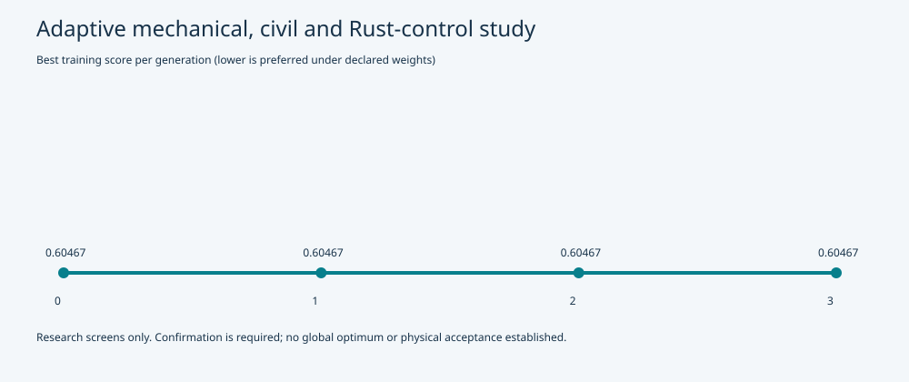
All indexed vehicle/beam comparisons. Complete installed cost, total manufactured mass, supplier-origin content and accepted erection time remain unknown. Body and magnetic equipment allocations are targets; services/HVAC energy is not automatically reduced with body mass. Station traction is accounted separately from the services pack.
| Scenario | Repeat six-car allowance | Ordinary viaduct with fallback access |
|---|---|---|
| low | $885,330 | $2,737,509 |
| base | $1,180,440 | $3,650,012 |
| high | $1,770,660 | $5,475,017 |
These are quantity/process assumptions without supplier quotations. First-pilot, station buildings, actual electrical ratings and utility reinforcement, terminal/depot/recovery, land/air rights, development/factory capital, evacuation, EPC, tax/finance and lifecycle omissions remain open. City bills separately price eight scopes: fleet, ordinary elevated civil, terminal civil, station electrical targets, a conditional footing increment, booster electrical plant, booster mount stock and independent rescue kits. None is a complete railway price. No proven localisation percentage is claimed.
The partial interface retains exact cartridge/fastener material regions and hybrid floor load paths; it is not a complete equipped GFRP train. Reaction iron, bearings, connections, capture, tolerances and reinforcement remain necessary.
Interface FreeCAD · Interface STEP · Civil FreeCAD · Civil STEP · Native receipt

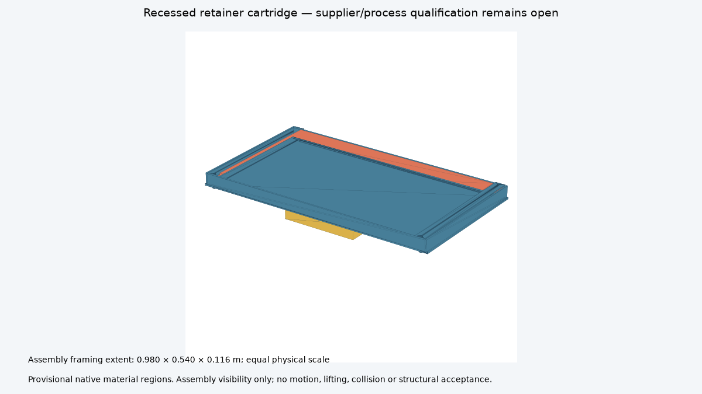
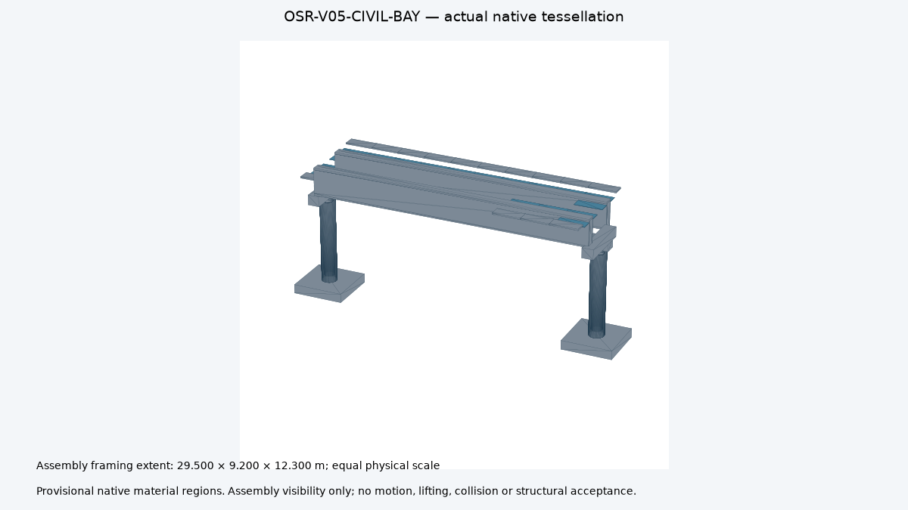
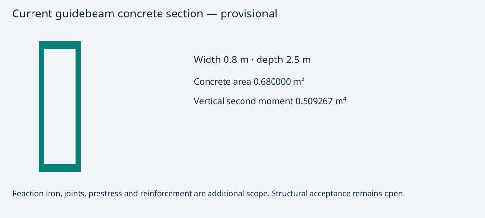
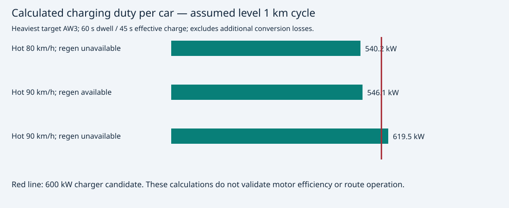
Interface visibility video · Civil visibility video. These CAD videos show final-position visibility; the separate moving-train video uses calculated motion.
Full evacuation studies and outstanding evidence · Beam-only FreeCAD · Beam-only STEP · Native receipt. Continuous walkway removal depends on an accepted all-stop evacuation/recovery solution. The vertical spiral chute remains a candidate; fabric/deployment/assistance, ground exit, fire, wind and safe landing over roads/water/roofs are unresolved. No net system saving is released from gross deleted material.

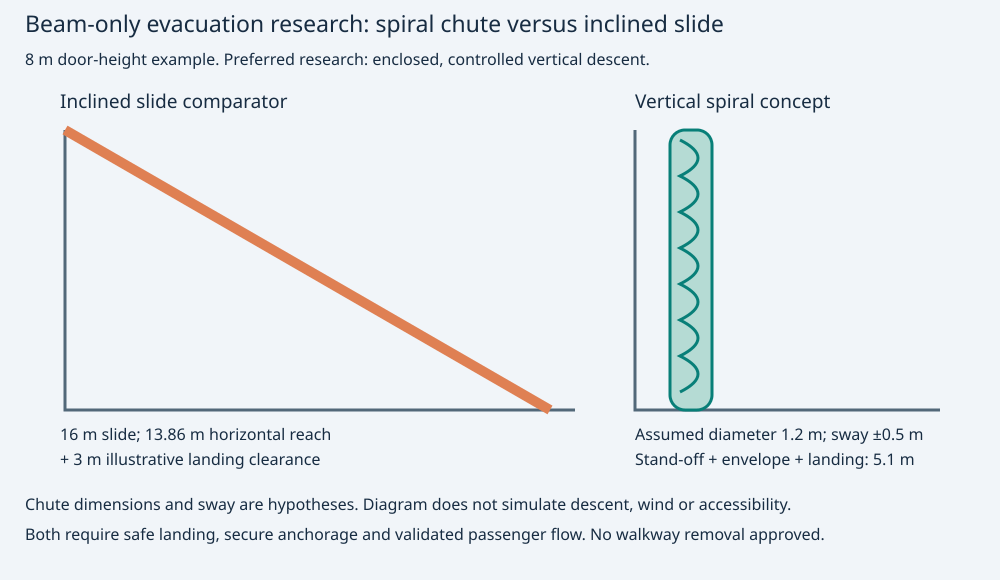
Entry FreeCAD · Entry STEP · Support FreeCAD · Entry/support sensitivity evidence · Partial entry materials · Support demands · Advisory egress Rust replay · Native-derived vertical replay · Source receipt


Entry visibility video · Support visibility video. Support demand screens do not establish capacity. Extended entry hardware is not a selected travel-stowable chute.
Actual Rust/vertical-beam replay · Compiler and source receipt. This retained demonstration is one stationary rigid car with three body modes and ideal instantaneous force channels. The new moving six-car study is separate; flexible bodies, actual shared magnetic maps, soil/joints/contact and physical correlation remain open in both.
Partial station FreeCAD · Station STEP · Station quantities and emergency-energy sensitivities · Current applicability register · Station visibility video
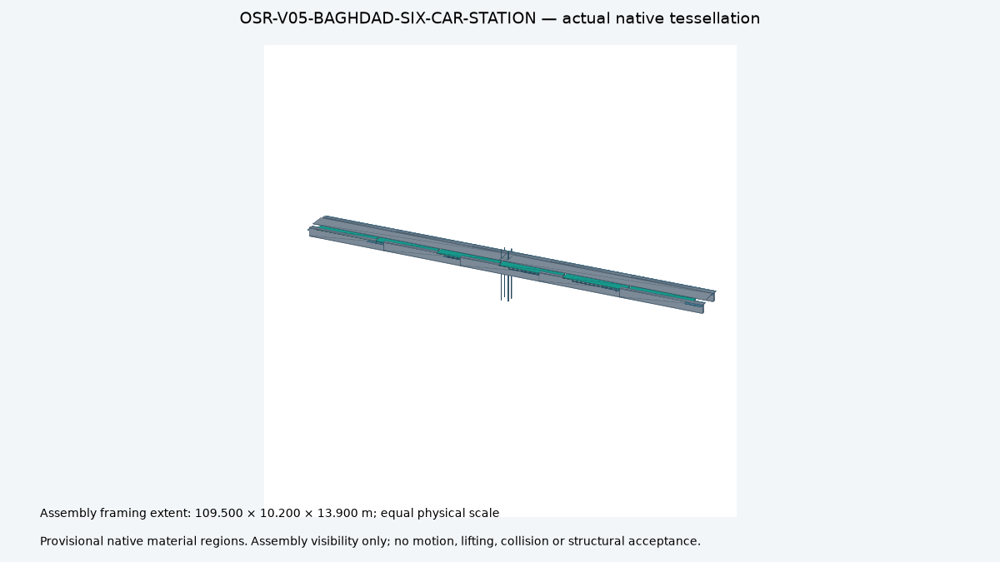
Six 17 m bodies total 102 m; assumed coupling gaps give 104.5 m. Four doors/car, magnetic-arm clearances and bridge-plate requirements share the current configuration. Full station supports/stairs/services and equipment remain unqualified. All 266 city packages now locate proposed operating stops on mapped polylines, retain access assignments, retain passenger-transfer spacing conflicts, locate booster/rescue assets and report source versus operating counts, capacity shortfalls, headway, fleet, battery duty and eight-term bills. Sectioned protection and accessible transfer hubs remain unqualified; no train switches are inferred. Their flat motion/capacity screens do not approve sites, grades, curved magnetic phase/guidance or land. Any unresolved capacity/trajectory case remains visible.
The default Baghdad reference remains 273 proposed stops with 10 spacing conflicts. Interchange investigation and limits · Complete alternatives and source evidence · Receipt.
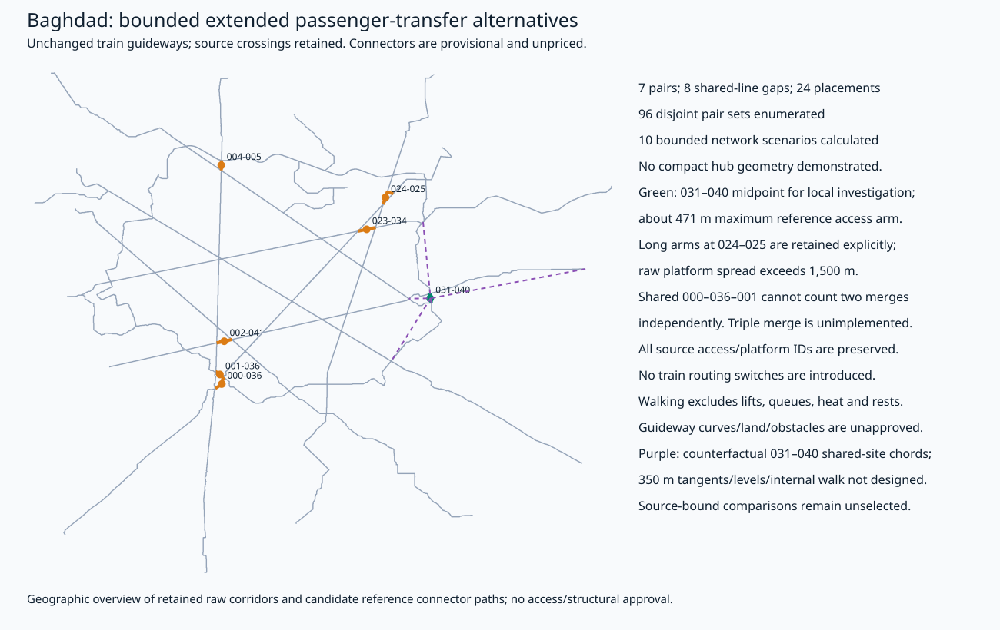
7 pairs produce 24 extended-transfer placements and 10 bounded network alternatives, including rejected extent controls. Original cross-line boarding platforms remain in the unchanged-guideway options. Grouping station IDs does not remove their physical walks; cross-line transfers may require both connector arms. The focused pair-031-040/line-9/midpoint midpoint case has about 471 m maximum reference access arm and 942 m unique connector. Its partial electrical target allowance is not a quote or complete economic break-even.
Separate coordinated shared-site concepts physically draw the involved fixed lines through a common location. They change guideway geometry: old civil classifications and prices are not reused. The original concept leaves station tangents, levels, structures and internal walks undefined; its100 m compact walk remains a sensitivity assumption and 0 compact layouts are proved by that packet. The separate geometry study below develops fitted alternatives and actual paths. No alternative is selected, no train-routing switches are introduced, and access/flow/lift resilience, shade, rests, fire/evacuation, land and full lifecycle cost remain open.
Requirement-specific qualification tasks and test protocols · Qualification source receipt. The task graph distinguishes executable development studies, supplier and site records, physical rig measurements and independent acceptance. A prepared procedure or synthetic record does not close a physical requirement.
Sectioned multi-train capacity prototype · Capacity source and execution receipt. Progressive reservations use actual local Rust ownership and conservative stopping envelopes. Delayed clearance, stale observations, obstruction, rollback and unavailable braking are separate controls. This is an additional bounded study; current city headways and capacity holds are retained.
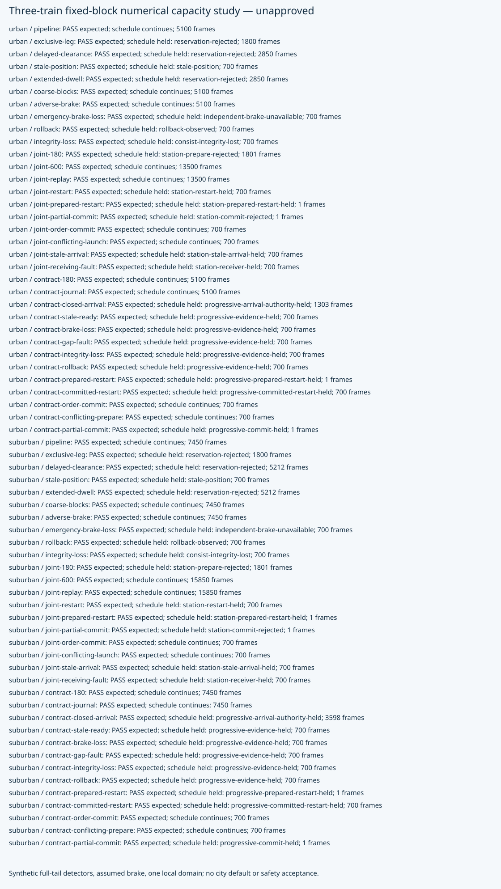
Interchange access, structures and passenger-flow alternatives · Access source receipt. Connector modules and supports, access gradients, rests, lifts, passenger pulses and outage cases are counted explicitly. Reference loads and flow assumptions require local qualification; no connector or compact shared-site hub is selected.
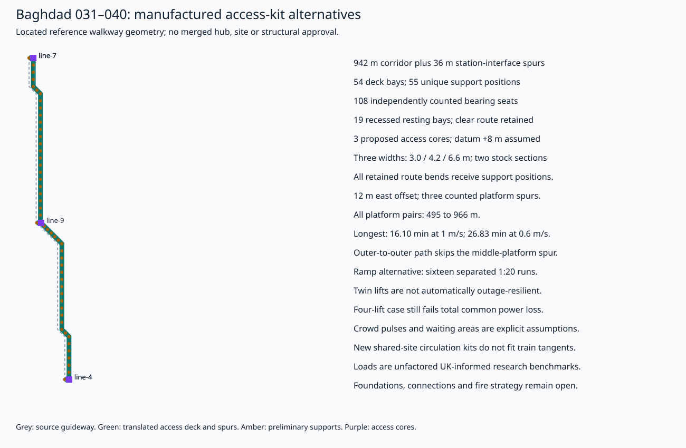
Recovery protocol and limits · Actual inputs, checkpoints and event transcripts · Source receipt. A separately pinned model and policy, fresh whole-consist evidence at declared berths and a fenced new epoch are required. Reconciliation is atomic across all resources; old contracts stay retired and fresh prepare/commit is mandatory. Every retained replay is re-executed during verification. Moving restart, cross-controller handover, authenticated installed persistence and physical detector/timing qualification remain open.
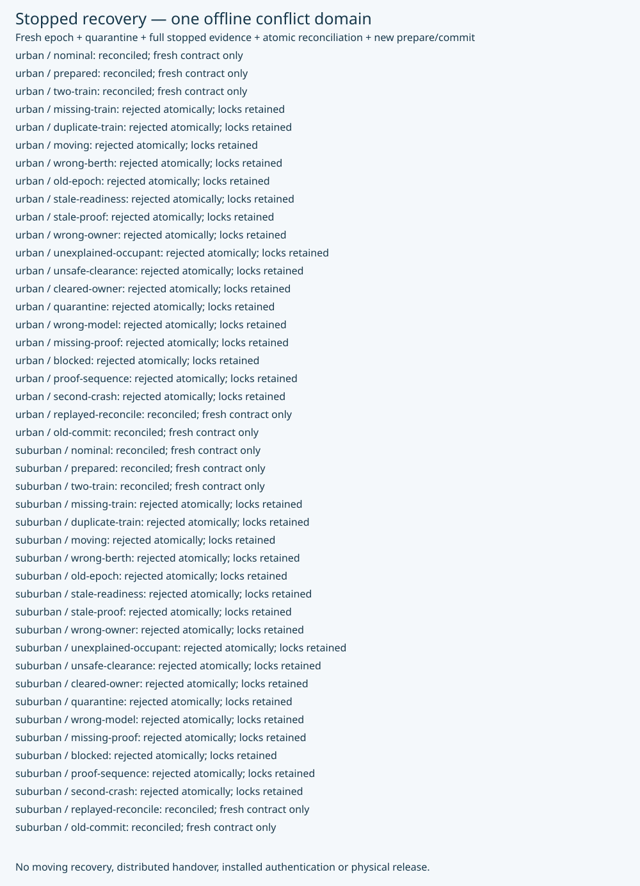
Assembled body, load-path revisions and limits · Native structural assembly · Compressed STEP · Geometry-derived partial mass and inertia · Counted cut list · Retained incompatible-layout control · Source receipt.
Joined structural stock, panels, hardpoints and cartridge interfaces are placed as defined material regions. The former crosshead/guidebeam interference and incompatible bolt arrangement remain negative controls. Revised arms and fasteners carry their actual geometry, loads and counted mass. Native mass and inertia use declared densities; omitted equipment and unqualified material/joint behavior prevent an equipped-vehicle or manufacturing claim. Body and joint compliance are separate from the retained rigid-car numerical plant.
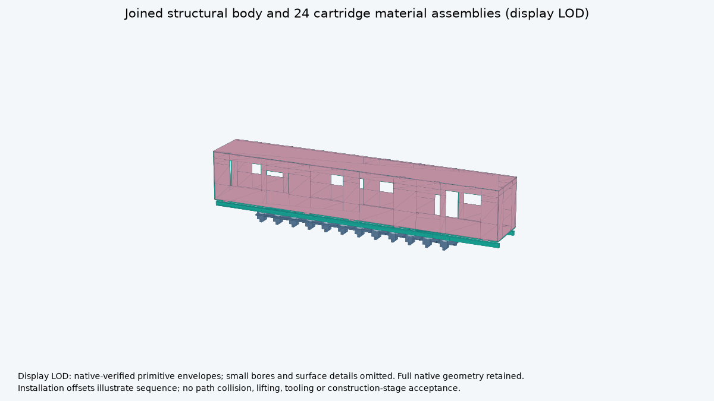
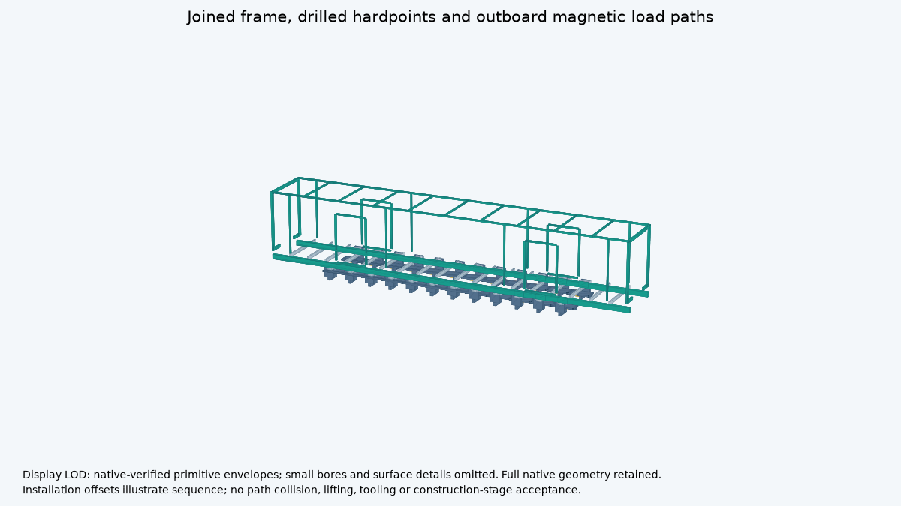
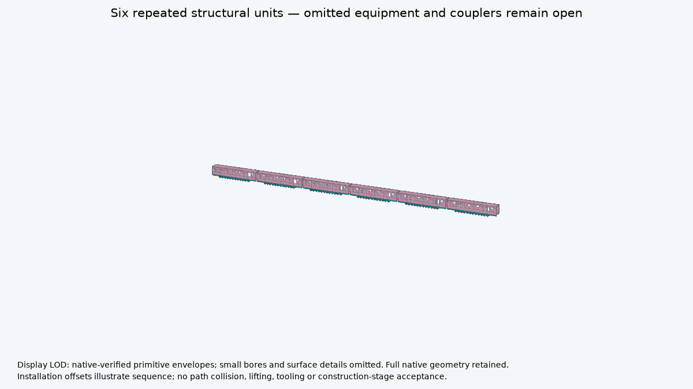
Structural assembly visibility video. A staged visibility sequence does not qualify a movement path, tooling, lifting or manufacturing process.
Control responsibilities, coil construction and launch design · Counted purchasing BOM · Phase/slot winding schedule · Electrical interface schedule · Quantities, R/L/voltage, thermal and braking screens · Actual Rust current/commutation execution · Source receipt.
Ferrite provides bias; measured-gap support and guidance require active coil current. The SBC supervises allocation, while proposed local MCU loops and independent hardware protection control power. The counted candidate has 432 physical coils and 288 bipolar current circuits per six-car train. A separate 350 m station LSM winding/direction uses four custom converters and 560 face cassettes per two-direction station. A compact 50-turn support coil passes declared depth/packing screens; the larger pack and lower-turn current failures remain retained. High station current, voltage and braking duties remain visible. These calculations and 17 executable coupon/adverse cases do not replace the ideal-force moving plant or qualify hardware.
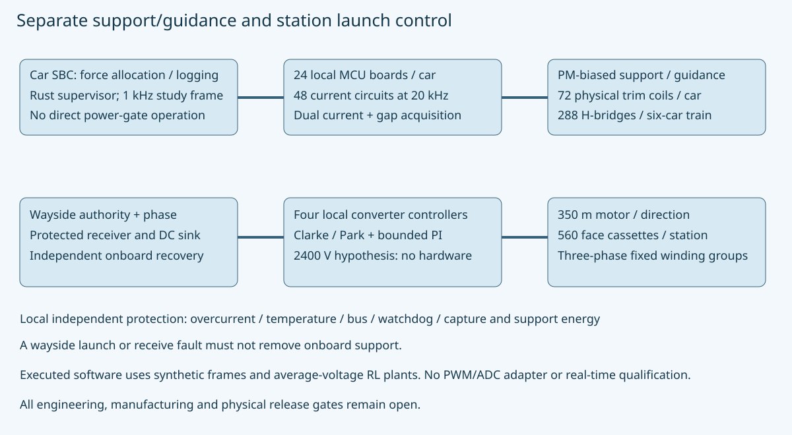
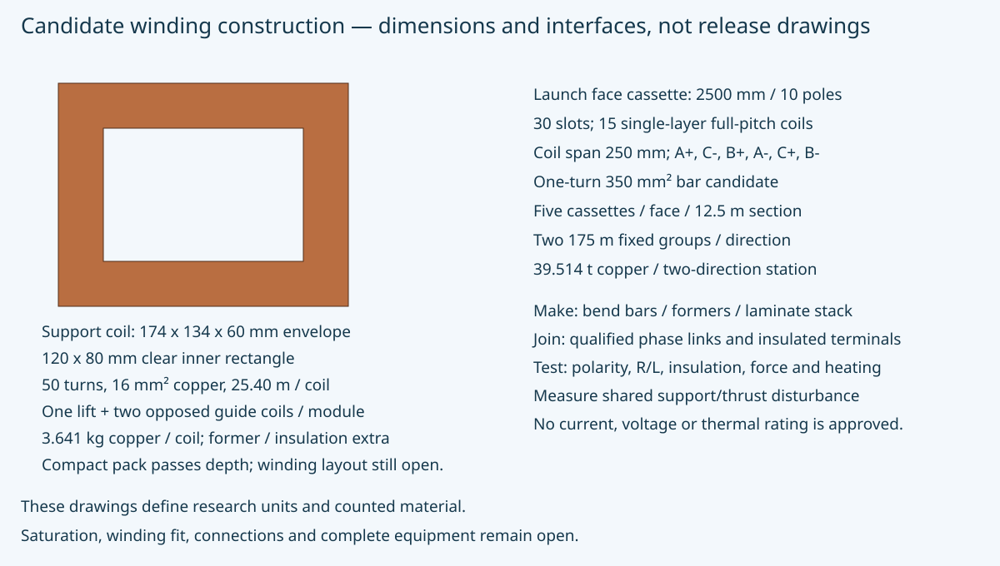
Exact drilled-stock alternatives and unchanged confirmation criteria · Full mass, compliance and moving-run comparison · Source and execution receipt. The GFRP sensitivity retains its phase-limit failure. Alternative steel spines keep the same outer envelope, count changed wall cuts and longer crush spacers, and add every incremental material kilogram to the full retained AW3 mass. Their actual Rust runs retain the existing phase/gap/force criteria. This tests a bounded repair idea; thin-wall joints, welds, thermal behavior, shell/frame participation and the heavier load cases remain separate requirements. No alternative is adopted as the equipped body or city default.
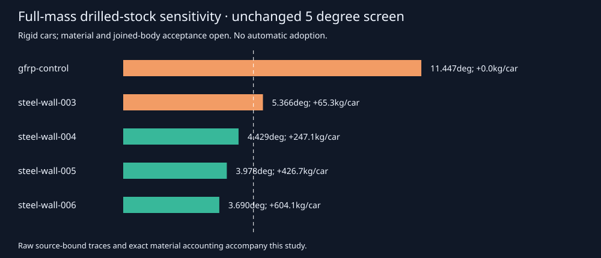
Station tangents, transitions and computed passenger routes · Explicit geometric units · Source receipt. The study accounts for both directions' finite powered zones, full train and boarding-door extents, transition curvature and actual circulation obstacles. Invalid through-line constructions remain rejected controls; terminal alternatives require explicit turnback geometry. New station/guideway/access quantities receive no former civil price credit. Land, structures, magnetic curve behavior, services and operation remain unqualified, and no hub is selected.
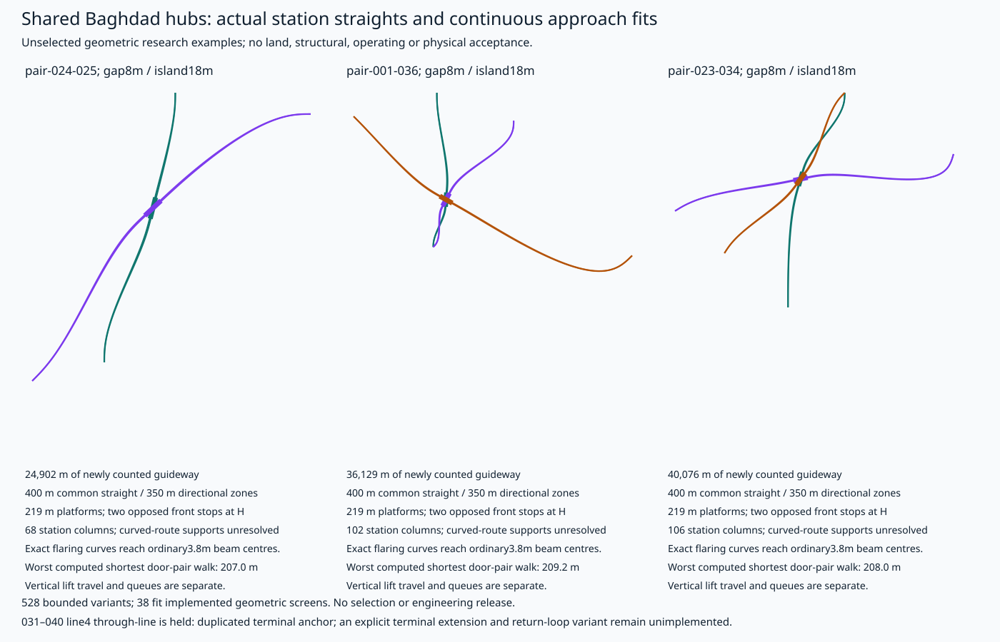
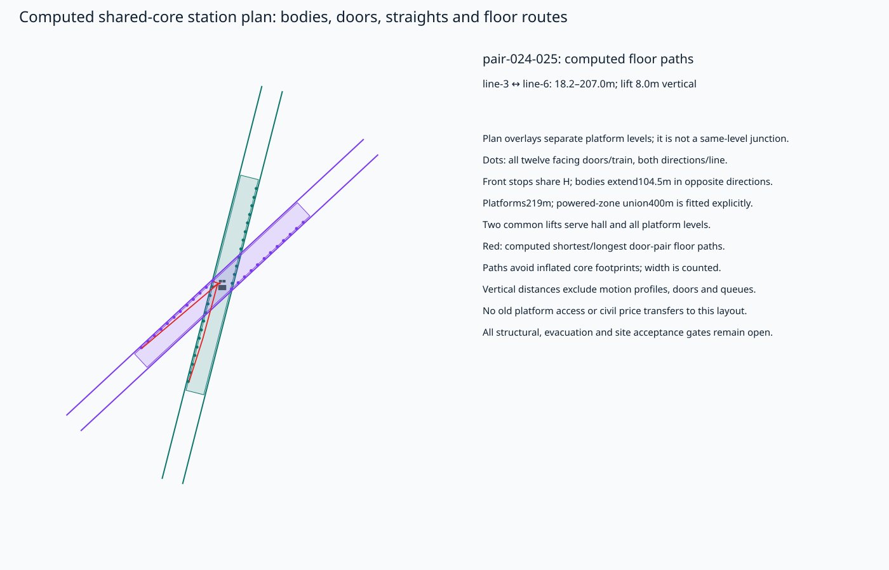
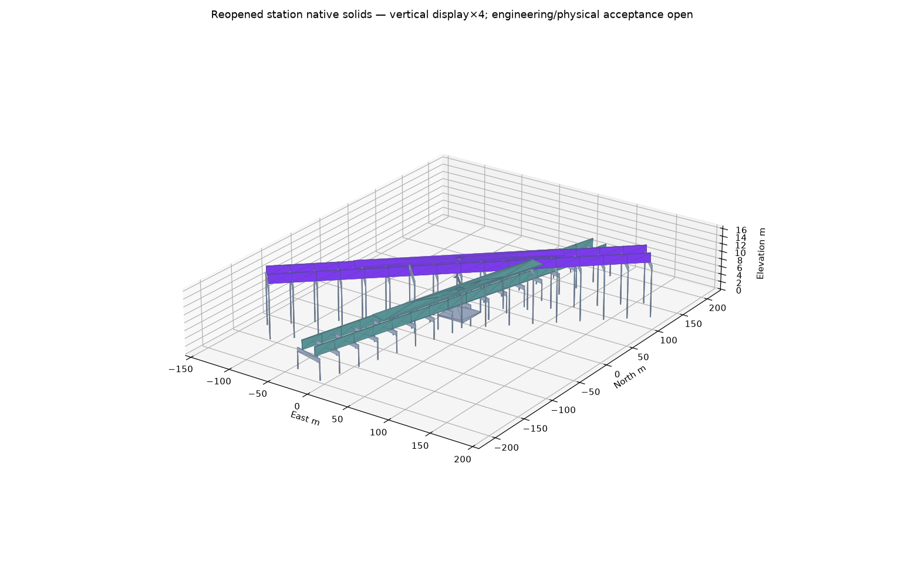
| SYS-001 | Nominal carbody length 17 m, with explicit coupler pitch and selected consist envelope. Baghdad uses six cars; other formations require city-specific capacity and platform reconciliation. | Open |
| SYS-002 | Ferrite permanent magnets; Sintered hard ferrite, grade and temperature-dependent properties to be qualified | Open |
| SYS-003 | Fixed station LSM windings and explicitly located interstation booster zones provide main traction. Ordinary coast spans have no continuous powered propulsion. Onboard active windings and electronics provide independent support/guidance. Retain independent services power, emergency stopping and recovery; each booster requires its own protected electrical and civil configuration. | Open |
| SYS-004 | Normal running uses fixed ferrite support/propulsion field assemblies, onboard support/guidance coils and station-mounted powered propulsion. Prove support, guidance, receiving brake, independent emergency stopping, parking, capture and recovery separately. | Open |
| SYS-005 | Stationary hover in normal service; Zero-speed lift AND stability must be demonstrated; protection power and controlled landing remain required | Open |
| SYS-006 | Small load-dependent vertical movement; Initial target 5 mm AW0→AW2; define AW3 travel separately | Open |
| SYS-007 | Integrated construction; Share qualified structural carriers and services; ferrite blocks do not replace the primary crash/bending load path | Open |
| SYS-008 | No mainline switches; Rerun terminal, headway, failure recovery and depot access models | Open |
| SYS-009 | Local fabrication and low repeat cost; Price manufactured assemblies, fixtures, yield, labour and inspection, not raw magnets alone | Open |
| SYS-010 | Use 30 kWh/car services storage as the central study, with 20/40 kWh cases. Size full run and disconnected dwell consumption, hot services, EOL/SOC window, missed charging and protected-support reserve. No onboard main traction battery. | Open |
| MASS-001 | export mass, centre of gravity, inertia tensor, support positions, uncertainty and evidence for every assembly. Include magnet mass exactly once. Include all cold plates, cables, fasteners, covers, gap sensors and field shielding. Retain a separate growth reserve and produce a mass-closure ledger for each battery/magnet variant. | Open |
| GEO-001 | publish a three-dimensional swept-envelope analysis on tangent, minimum horizontal radius, vertical curves, cant transitions, beam ends and depot routing. Verify every active face, cover, capture rail, platform interface and evacuation path. | Open |
| GEO-002 | create a gap budget with independent terms for rail manufacturing, erection/shimming, beam bending/twist, bearing movement, thermal expansion, carbody bending/twist, load-induced movement, control tracking error, sensor bias/noise and wear/debris. Differentiate absolute structure deflection from relative magnet-to-rail displacement. Every omitted or unresolved term remains an explicit uncertainty and acceptance hold. | Open |
| GEO-003 | integrate magnet carriers into a continuous qualified frame, but retain positive block containment after cracking, bonding failure and crash loads. Ferrite is a ceramic material and is not the primary tensile, bending, impact or fatigue chassis structure. Use common brackets, crossmembers and service channels where the actual load path permits. | Open |
| GEO-004 | determine ride quality using a flexible vehicle/guidebeam model. The 5 mm load-movement stiffness alone produces a several-hertz heave mode in a single-body approximation. This is not proof of comfortable suspension. Evaluate whether electromagnetic control provides adequate disturbance isolation without a mechanical secondary suspension. | Open |
| PWR-001 | validate normal, crush load, maximum grade, strong headwind, hot HVAC, weak magnet, reduced battery voltage, missed chargers, low SOC, full SOC/no-regeneration and one failed traction channel. | Open |
| PWR-002 | Size services interfaces from complete run and disconnected-dwell duty. For the six-car hot90s/60s/45s case, replace10.5kWh and serve360kW live load:1.20MW connected before losses. Study150/200/250kW percar. Include station propulsion, two directions, supply/thermal ratings, taper, EOL and missed charging separately. | Open |
| PWR-003 | Use receiving station DC bus and qualified resistor/chopper as the baseline energy sink. Size peak and repeated brake duty independently of an available consumer. Include independent stopping and stationary holding after station supply/receiver failure; an already coasting train cannot stop merely by withdrawing authority. | Open |
| PWR-004 | keep support/protection power available during a traction fault for the period required to execute the safe-stop strategy. "Trip" must inhibit unsafe propulsion while preserving the control needed for stable support until capture/landing is safe. Determine independent power-domain and energy-reserve requirements from the hazard analysis. Permanent magnetisation does not establish stable contactless operation after complete control-power loss. | Open |
| CIV-001 | price and design a **dual-direction route-km**, equal to two single-direction beam-km, unless a result is explicitly labelled otherwise. Include beam structure, reaction surfaces, supports, foundations, bearings/joints, erection, transport, installation, survey/metrology, drainage, protection and an independently accepted evacuation and maintenance access arrangement. Keep station, depot, major bridge, utility, land and charging scopes separate and visible. | Open |
| CIV-002 | Use 25 m span and 8 m pier height as provisional starting geometry; explore 20/25/30 m spans with actual geotechnical zones and erection logistics. Do not assume a nominally narrower beam automatically permits longer spans or lighter foundations. Magnetic attraction can create large local opposing forces even when net vertical support equals train weight. | Open |
| CIV-003 | derive the passive rail's material, laminations if required, pole/tooth geometry, sectional kg/m, mounting pitch, adjustment range, corrosion protection, thermal gaps, magnetic continuity, capture faces and inspection access from the chosen circuit. Ordinary unqualified steel cannot be assumed to have negligible eddy-current/hysteresis loss at service speed. Reaction rails remain passive electrically while carrying induced or varying magnetic fields. | Open |
| CIV-004 | retain the one-metre clear evacuation walkway planning requirement until the deployment's approved egress design replaces it. Compare a common central walkway and separate walkways using actual access, door direction, vehicle-to-walkway height, disabled evacuation, smoke/fire and recovery cases. A narrow beam does not eliminate the width needed by passengers, maintenance or the vehicle swept envelope. | Open |
| CIV-005 | compute coupled guideway/vehicle dynamics, guidebeam bending/torsion, seismic/wind response, thermal gradients, settlement, joint steps and surface alignment. Publish both structural ultimate/serviceability results and the tighter local magnetic-gap results. Derive magnetic-interface tolerances from the complete relative-gap budget. | Open |
| CIV-006 | use adjustable, replaceable reaction-rail cassettes only if their fasteners, tolerances, inspection and lifetime cost are included. Allocate correction between concrete casting, surveyed erection and precision magnetic surfaces. Do not demand machine-tool tolerances from the whole viaduct without pricing how they are achieved and maintained. | Open |
| CIV-007 | evaluate debris, ferrous-object attraction, sand, drainage, rail corrosion, damaged rail joints and contamination. Covers must be included in the field/loss and mechanical-clearance models. Allow full access for rail replacement and magnet module service without dismantling the civil beam. | Open |
| OPS-001 | select an explicit switch-free mainline topology. Options are continuous directional loops, terminal balloon loops, or independently reversible shuttle guideways/sections. A normal double-track terminal that swaps trains between tracks requires a crossover; it cannot retain that operation while claiming no mainline switches. Loop land/civil costs and shuttle capacity/dead-time belong in the model. | Open |
| OPS-002 | recalculate capacity, headway, commercial speed, platform occupancy, fleet, spares, timetable and depot dispatch. One-minute dwell can dominate travel time on one-kilometre stop spacing. Compare at equal passengers/hour/direction and service hours; longer travel time or lower capacity is a changed product requirement, not a cost saving. | Open |
| OPS-003 | define the failure-blocking consequence of each no-switch route. Demonstrate controlled stopping, evacuation, towing/recovery and reopening with a failed car on the most constrained elevated section. Access to a depot switch does not provide a mainline bypass. Use realistic recovery time in availability and spare-fleet calculations. | Open |
| OPS-004 | Provide magnetic module service, retained-magnet handling fixtures, safe support stands, field measurement, gap/current calibration, coil/inverter replacement, rescue equipment and guideway metrology. Size cranes, lifting access and inspection facilities from actual assemblies and maintenance routes. | Open |
| OPS-005 | preserve level boarding and door-to-platform protection over AW0–AW3 motion, control tolerances and failures. A five-millimetre normal load shift is only one term. Define what happens to door enabling after contact/capture or loss of levitation. | Open |
| CTL-001 | Implement local deterministic Rust module/group control and train-level force allocation on declared off-the-shelf SBCs with isolated physical I/O and independent protection. Benchmark exact processors, power domains, sensors and outputs against derived timing and fault requirements; processor clock rate or multicore packaging establishes no independence. | Open |
| CTL-002 | initial scheduling study points are 10–20 kHz PWM/current control and 1–2 kHz gap/force allocation sampling, subject to the chosen power stage, sensor bandwidth and unstable-mode dynamics. These are starting design targets, not prescribed stabilising bandwidths. Distinguish switching frequency, control sample rate and closed-loop bandwidth. Demonstrate worst-case execution time, latency, jitter, quantisation, saturation recovery and delay robustness on target hardware. | Open |
| CTL-003 | measure enough independent gaps and inertial/body motion to observe vertical/lateral motion and pitch, roll and yaw. Each channel carries calibration, temperature compensation, quality flags, timestamp, range and uncertainty. Treat sensor bias as well as loss. Define actuator limits from temperature, voltage and electromagnetic force maps. | Open |
| CTL-004 | isolate train/OCC supervision from the inner suspension loop. FUXA provides displays, alarms and maintenance information; it does not close the lift-control loop or grant movement authority. Loss of supervisory communications must lead to a bounded locally controlled state. | Open |
| CTL-005 | add an independent protection design that detects dangerous gap, overspeed, overcurrent, sensor disagreement and uncommanded thrust. The action sequence must be suspension-aware: restrict traction, preserve required support control, brake, then capture/secure as designed. A blanket removal of support power is not an accepted safe-stop action. | Open |
| CTL-006 | Specify contactless odometry using justified combinations of guideway markers, radar/optical speed, electrical position and inertial measurements. Quantify observability, low-speed uncertainty, calibration, sensor failure and route/environment limits before acceptance. | Open |
| CTL-007 | add machine-readable interfaces for gap, pole overlap, current, estimated force, force reserve, bus state, temperatures, capture contact, protection power, mode and sensor health. Include units, bounds, provenance and time validity. Extend formal invariants for permitted movement, force/thermal saturation, loss of control and switch-free occupancy. Formal state-machine checks do not establish electromagnetic force or physical stability. | Open |
| MFG-001 | Develop repeated structurally participating GFRP sandwich panels, qualified longitudinal load paths, reinforced openings and hardpoints. Use four passenger doors/car consistently in CAD, mass, dwell and evacuation study. Size laminate/core/joints and production processes; no mass savings accepted from allocated budgets alone. | Open |
| MFG-002 | specify ferrite by grade, magnetisation axis, remanence/coercivity over temperature, dimensions, permissible chips/cracks, coating if needed and batch traceability. Include controlled assembly fixtures, magnetic keepers/shields where appropriate and a verified field map of each completed module. Identify the installed location and orientation of every replaceable cartridge. | Open |
| MFG-003 | define winding conductor, insulation system, impregnation, electrical tests, cooling interface, current calibration and module end-of-line force/gap test. Include production yield, rework, scrap, supplier quality and labour. Price the actual manufacturing routing in ERP rather than using only material cost. | Open |
| MFG-004 | preserve positive retention after bonding failure and differential thermal expansion. Establish non-destructive inspections where feasible, periodic gap/field checks, crack/debond indicators and replacement limits. Ferrite's corrosion and high-temperature advantages do not remove the need to inspect mechanical supports, insulation, cooling and sensors. | Open |
| MFG-005 | issue EBOM/MBOM revisions, manufacturing drawings, travellers, fixture definitions, inspection plans, calibration certificates, installed serial records and spare-parts lists. Bind each to the same vehicle/rail configuration hash. Keep preliminary engineering items distinct from production-released ERP items. | Open |
| MAG-001 | Develop six 17 m by 2.65 m GFRP study bodies, ferrite PM-biased active support and fixed station/located-booster LSM propulsion. Coasting sections outside the finite powered zones remain propulsion-unpowered. Use independent fixed lines with passenger transfers at junctions; compare urban 1.5–2 km and explicitly classified suburban 4–5 km spacing. Count support drives, sensors, booster equipment, passenger equipment and recovery mechanisms in the BOM. | Open |
| MAG-002 | Central mass allocation is 14,200 kg/car empty including 3,000 kg ferrite, 30 kWh services storage and 1,800 kg growth reserve. AW2 adds 120 x 75 =9,000 kg; AW3 adds160 x75=12,000 kg. Compare body targets4400/5200/6300 kg; itemise all changes. Mass, CG and inertia remain unverified. Count ferrite once. | Open |
| MAG-003 | Derive exact-revision gravity and inertia from the component ledger. At26,200 kg AW3, gravity is257,022 N/car; equal24-cartridge allocation is10,709.25 N only as a preliminary static screen. Unequal loading, failed support and moving dynamics require separate analysis. | Open |
| MAG-004 | Retain 24 modules as an initial packaging study, not a fixed architecture. The earlier two 12 m × 0.5 m × 0.05 m strips occupy 0.60 m³; at an assumed density of 5,000 kg/m³ this is 3,000 kg. This volume arithmetic establishes no levitation capacity. It also excludes cores, windings, brackets, encapsulation and covers. | Open |
| MAG-010 | Evaluate PM-biased active attractive suspension and separately identified shaped-pole restoring alternatives with explicit circuit, force/moment, gap, thermal and loss definitions. Do not mix equations or credit unproved passive stability between alternatives. | Open |
| MAG-011 | Reject any model that credits sustained zero-speed lift to a plain permanent-magnet array inducing currents in a passive normal conductor. Enlarging that array does not remove the requirement for relative motion or powered time-varying excitation. | Open |
| MAG-012 | Rank A and B on complete installed system mass, force capability, power, guideway cost, gap tolerances, controllability, failure response, thermal performance and assembly requirements. A visually simpler cross-section or a lower raw magnet price is insufficient for selection. Record why a topology is selected and retain the losing topology as a comparison model until the choice is supported by hardware evidence. | Open |
| MAG-020 | Set 5 mm AW0-to-AW2 vertical movement as the initial design target, with 3 mm and 10 mm sensitivity cases. The additional lift is 88.29 kN; therefore the required average restoring stiffness is 29.43, 17.658 and 8.829 MN/m for 3, 5 and 10 mm respectively. At 24 equal modules, the 5 mm case corresponds to 735.75 N/mm per module. AW3 adds 117.72 kN above empty: a linear extrapolation of the 5 mm/AW2 stiffness would require 6.67 mm travel, while restricting AW0-to-AW3 movement to 5 mm would require 23.544 MN/m. Select and verify the AW3 travel/active-force requirement explicitly; do not assume the usable force curve remains linear. | Open |
| MAG-021 | Distinguish carbody displacement, physical magnetic gaps and pole overlap in every model. In Architecture B, 5 mm vertical displacement can change pole overlap while the lateral clearance is nearly unchanged. In Architecture A, a smaller upward-attracting gap increases lift and may place a more heavily loaded car higher relative to its rail. Do not transplant the "heavier car sinks" assumption between topologies. | Open |
| MAG-022 | Treat the earlier 8 mm magnetic gap as a study point. Determine minimum permissible gap, normal equilibrium range, control travel and contact thresholds from a tolerance budget including manufacturing, rail installation, beam deflection, carbody bending, temperature, curves, sensor uncertainty, disturbances and control error. Passenger-load movement must not consume all available clearance. | Open |
| MAG-023 | Determine the complete force/moment stiffness matrix and controllable modes, not only vertical force. Include vertical and lateral translation, pitch, roll, yaw, longitudinal motion and the dominant elastic modes. Unstable directions must be stabilised at zero speed. Along-track translation can be intentionally free or driven; that does not establish lateral stability. | Open |
| MAG-024 | Simulate passenger movement, eccentric boarding, braking weight transfer, curve loads, wind loads, rail joints, beam deflection and differential module heights. A 5 mm load movement target alone does not establish passenger comfort. With approximately constant 17.658 MN/m total stiffness and the AW0-to-AW2 midpoint masses of 22.5/23.5 t, a single-body model has an undamped heave frequency of approximately 4.46/4.36 Hz. Use the actual multi-body model and route disturbance spectrum to determine ride quality and damping. | Open |
| MAG-025 | Investigate direct electromagnetic support of the carbody. If it fails ride or clearance requirements, identify the minimum necessary compliance and its mass and disclose any added mechanical mechanisms. Conversely, do not remove structural flexibility or suspension functions from the model merely because the preferred design contains no mechanical ride suspension. Verify horizontal and vertical swept geometry as well as forces. For a straight active length L following a horizontal rail curve of radius R, the chord-to-arc deviation scales approximately as L²/(8R); 12 m at R = 100 m gives 180 mm of horizontal offset. This exceeds an 8 mm lateral allowance at a narrow vertical face but does not directly consume an 8 mm vertical lift gap at a broad horizontal face. Shortening the individual modules does not automatically solve the global offset if they remain fixed along a straight rigid underframe. Resolve lifting-face overlap, separate guidance geometry, vehicle articulation/compliance or route curvature before claiming a car with fixed magnetic modules can negotiate the existing alignment. Vertical curves and twist require their own clearance calculation. | Open |
| MAG-030 | Use sintered hard permanent-magnet ferrite, distinguishing it from soft ferrite core materials. The initial Br = 0.43 T and density = 5,000 kg/m³ are calculation inputs pending a specific grade and procurement specification. TDK lists a hard-ferrite grade with Br 430 ± 10 mT; its ferrite guidance also identifies ceramic brittleness and a Br temperature coefficient near −0.18%/K. These data support a material study, not equivalence between every low-price ferrite block and that grade. Qualified supplier data and grade-specific measurements remain required. | Open |
| MAG-031 | Carry at least −20, 20, 50, 80 and 100°C magnet-temperature screening points until the operating and survival environment is agreed. These are analysis cases, not accepted operational ratings. Keep ambient, rail, magnet, winding, adhesive and battery temperatures separate. For sensitivity, the earlier −0.20%/K Br coefficient gives Br(80°C) ≈ 0.3784 T from 0.43 T at 20°C. In a simple unsaturated B-squared force estimate, this corresponds to 77.44% of the reference force. Recompute from the real magnetic circuit; do not assume this ratio transfers exactly under saturation or active compensation. | Open |
| MAG-032 | Check irreversible demagnetisation at the minimum material temperature as well as at maximum temperature, with the worst reverse coil field, opposing magnet assembly field, shorted winding and manufacturing tolerance. High temperature resistance is not constant magnetic output. Obtain full second-quadrant and recoil curves over temperature and a manufacturer-approved demagnetisation margin. | Open |
| MAG-033 | Do not credit ferrite ceramic as the primary crash, bending, tensile or fatigue load path of the chassis. Integrate magnets into the structural assembly through carriers, pockets, clamps, potting or bonded interfaces with positive retention. Design for differential thermal expansion, block cracking and local debonding. Structural integration means shared engineered support, not an assumption that brittle blocks replace a qualified underframe. | Open |
| MAG-034 | Each magnet module shall have polarity/orientation poka-yoke, a traceable material batch, dimensional inspection and a field-map acceptance record. Check every block or a justified manufacturing sampling plan for remanence, orientation and defects. Verify the complete assembled field, including weak-side leakage. Use assembly fixtures that control attractive forces without depending on manual alignment near an exposed gap. Make a damaged module replaceable without dismantling the whole underframe. | Open |
| MAG-040 | Compare wayside LSM fixed-zone, two-fixed-group and routed-section circuits at equal service and actual six-car magnetic overlap. A station LIM with priced vehicle aluminium secondary is a separate alternative. Include each face, bridge, winding, selector, sensing and normal-force interaction. | Open |
| MAG-041 | Shared vehicle ferrite support/thrust fields remain an unvalidated objective. Keep onboard support/guidance coils independent from station propulsion windings. Reconcile common magnetic volume and simultaneous forces through one material ledger and measured maps. | Open |
| MAG-042 | Station stators exchange external electromagnetic force with longitudinally periodic vehicle magnets. No interstation remote push or energy from permanent magnets is claimed. Include six-car phase registration, coupler compliance, winding R/L and current/voltage constraints. | Open |
| MAG-043 | Supply maps of thrust, lift, side force, cogging and force ripple against rail position, gap, lateral displacement, current and speed, including forward/reverse motoring and regeneration. Show how propulsion commands affect suspension authority. Size sensors and commutation from the selected pole/tooth combination; the previously discussed 200 mm array wavelength does not universally determine electrical frequency. | Open |
| MAG-044 | Report station mechanical output, DC input, RMS/peak phase current, voltage, rail/core/copper loss and cooling separately. The85%conversion reference is an assumption;2.346MW peak traction is not a bridge kVA selection. Include winding group and six-car phase/overlap constraints before procurement. | Open |
| MAG-050 | Produce reproducible 2D screening models and 3D finite-element models with nonlinear steel, grade-specific magnet curves, finite array ends, module seams, winding slots, joints, conductive covers, mechanical tolerances and mesh convergence. Export SI-unit force and loss maps with geometry/material/model revision identifiers. Verify force by at least two independent methods where practical, such as Maxwell stress and virtual work. | Open |
| MAG-051 | Publish the usable operating envelope, including lift capacity at the weakest magnet state and maximum normal gap, lateral stability/control margin, continuous and transient current limits, saturation margin, demagnetisation margin, thermal limits and torque capacity for asymmetric loads. The provisional 1.3 times AW3 static-weight screen is 334.1286 kN for the 30 kWh / 26.2 t profile and 336.6792 kN for the 50 kWh / 26.4 t profile. Reconciled component-ledger mass overruns require a newly calculated load profile rather than inheritance of either target. The multiplier remains a project hypothesis, not a dynamic-load derivation or regulatory safety factor. Retain full AW3 body/rail loading and asymmetric passengers. | Open |
| MAG-052 | Couple these maps into a six-degree-of-freedom vehicle model and flexible guideway model. Include actuator delay, sensor noise and bias, bus-voltage sag, current saturation, force ripple and structural resonance. Determine control bandwidth from unstable mode growth and disturbance rejection; microcontroller clock speed is not a stability proof. | Open |
| MAG-053 | Verify failure cases individually and in credible combinations: a magnet block cracked or incorrectly oriented; a missing module; a coil open or short circuit; an inverter stuck on or off; failed gap sensor; stale communications; guideway joint offset; a blocked cooling path; and common DC-bus interruption. A failed coil does not automatically remove permanent-magnet attraction. A shorted coil may generate speed-dependent forces and heat. Capture these effects in the fault model. | Open |
| MAG-054 | Prove stationary support and guidance, controlled stopping, power-off support and recovery separately. Fixed skids or capture surfaces may avoid deployment mechanisms, but require load, friction, energy and stability analysis. An AW3 31 t car at 80 km/h contains approximately 7.65 MJ of translational kinetic energy; any emergency stopping system must account for its energy path. Permanent magnets remaining magnetised do not by themselves guarantee contactless stability after a control failure. | Open |
| MAG-055 | Use progressive evidence gates: material coupon and block acceptance; static instrumented module rig; force-versus-gap/offset and thermal correlation; restrained closed-loop levitation; moving sled with representative joints and speed-dependent rail losses; multiple-module rigid/flexible body; and a representative loaded car/beam demonstrator. Do not advance from bench levitation directly to passenger operation. | Open |
| EVAC-DOOR | Protected, positively retained replaceable cassette at every designated evacuation doorway; designated doors and usable exits are separate counts | Open |
| EVAC-DESCENT | Enclosed spiral textile path with protected entrance and controlled descent for the declared passenger population | Open |
| EVAC-HEIGHT | Usable outlet at every required door-sill-to-ground height, accounting for terrain, train capture/roll and tolerances | Open |
| EVAC-ANCHOR | Entry frame and anchors transfer loads into vehicle structure; deployment clears beam, piers and other structures | Open |
| EVAC-OUTLET | Controlled ground exit and dispersal area; accepted alternative where roads, water or obstructions prevent descent | Open |
| EVAC-LIFECYCLE | Account for cassette, entry frame, attachments, inspection, maintenance, repacking and renewal | Open |
| EVAC-DRIVERLESS | Demonstrate deployment, entry, assistance and realistic throughput without assuming a trained attendant is present | Open |
| SP-001 | Develop fixed station and located midpoint-booster LSM zones with unpowered coasting outside those finite zones. Retain ferrite-PM-biased support/guidance and no onboard main traction. Count all booster equipment, interfaces and power. | Open |
| SP-002 | Label the maturity of every parameter. Distinguish project objectives, study assumptions, candidate designs and verified requirements. Six cars and station-sourced traction are project choices; 14.2 t tare, 3 t ferrite and 8 mm clearance remain study targets. Rehberg–Blümler informs an optimization method, not validated suspension gains. The civil section now defines a 25 m repeated product, hollow support candidates, a USD 22,000 ordinary-support procurement target and a two-shift production model. Keep the 15.4 t preceding train case, 13.4 t stretch case and old civil quantities for comparison. Do not mark target geometry, cost or throughput as accepted until its evidence is attached. | Open |
| SP-003 | Fix the Baghdad train envelope. Use six 17 m bodies, 2.65 m study width and 102 m total body length. Use 104.5 m only as an illustrative coupled footprint until couplers and gangways are resolved. Retain 120 passengers/car as the normal study loading and 160/car as the maximum study loading: 720 and 960 passengers/train, respectively, at the current 75 kg/person assumption. [R1] | Open |
| SP-004 | Use a 1.5 km urban spacing target minimum, approximately 2 km urban mean and explicitly classified 4–5 km suburban legs with located top-up accelerators where required. Preserve mandatory passenger-transfer junction stops and expose any shorter spacing as a conflict. Retain 1 km/90 s authored and 1 km/88 s developed cases as component benchmarks, not new route validation. The study speed limit remains 80 km/h; longer profiles require their own force, services, protection and recovery verification. | Open |
| SP-005 | Remove the intended equipment from the train BOM. Delete the onboard main traction motor/windings, main traction inverter, associated traction cooling and large traction-energy battery in this variant. Retain the magnetic support/guidance hardware, its power electronics, sensors, small services battery, doors, HVAC, lighting, communications, emergency stopping/capture provision and couplers. Record the removal explicitly so that later software or mass models do not quietly restore the old propulsion arrangement. | Open |
| SP-006 | Use magnets as the field source, not the energy source. Permanent magnets can provide magnetic bias and the field against which a station motor acts. The station electrical supply provides the train’s launch energy. Once outside a powered zone, gravity, aerodynamic resistance and magnetic losses determine the coast. A station cannot exert useful propulsion several kilometres away without powered equipment along that intervening route. | Open |
| SP-007 | Retain active stabilization for always-hovering operation. The leading design uses attractive PM-biased suspension with corrective coils and feedback, targeting low continuous control power. More ferrite alone does not establish stable, contactless support in every direction at rest. A moving-field electrodynamic Halbach system is a different branch: its speed-dependent lift cannot simply be assumed to remain available when stopped. Normal stationary hover and an orderly support-loss response must both be demonstrated. [R2, R33] | Open |
| SP-008 | Use MagneMotion M3 as the closest architectural reference. Its developer report combines vehicle PM support/guidance fields, stabilization coils and wayside LSM windings. Reuse that functional arrangement as a starting point for an independent ferrite design. Its articulated pods, vehicle size, powered-guideway coverage and performance are not the OSR specification. No qualified, openly licensed six-car ferrite passenger-maglev design was identified that can simply be copied. [R2] | Open |
| SP-009 | Design a physically correct single-beam magnetic interface. Arrange two symmetric support interfaces around one structural beam. In the attractive configuration, vehicle pole faces must sit below the iron faces toward which they are pulled upward; a magnet above a top-mounted iron face would attract the vehicle downward. Develop the wraparound carrier, guidance faces, capture clearances and load path together. Record support and propulsion gaps explicitly, including their geometric relationship where they share a magnetic face. | Open |
| SP-010 | Optimize finite ferrite blocks using the Rehberg–Blümler approach. Compare a conventional linear Halbach pattern with finite-block orientation optimization, an alternating-pole iron-backed circuit and a flux-concentrating ferrite/pole-piece circuit. Use the finite-dipole orientation method as an initial estimate, then optimize the actual cartridge, steel and coils in three dimensions. Preserve a useful alternating longitudinal field for propulsion as well as support force, gap tolerance and thermal/demagnetization margin. A static lift optimum need not be a useful LSM secondary. The paper’s circular-ring homogeneity gains do not establish railway lift or magnet-mass gains. [R34, R48] | Open |
| SP-011 | Use specific ferrite grades as comparison materials. TDK FB9B, FB9H and FB12H provide current, documented reference properties. Compare those against locally obtainable equivalents with complete demagnetization curves, dimensional tolerances and quotations. Premium performance must not be combined with an unverified commodity price. Some high-performance ferrites use lanthanum/cobalt additions; specify composition if avoiding these constituents is a procurement objective. [R3, R4] | Open |
| SP-012 | Check hot force and cold demagnetization separately. Use actual supplier curves over the selected temperature range, including opposing support/traction fields and faults. Ferrite remanence falls with increasing temperature, while its coercivity can become less favorable in the cold. Magnet temperature, winding hot spots and ambient air temperature are different model variables. Heat tolerance does not imply constant lift or unlimited service life for adhesives, insulation and seals. [R5, R6] | Open |
| SP-013 | Retain 3 t of ferrite for the first optimized-cartridge comparison. At 5,000 kg/m³ this is 0.60 m³/car, or 18 t/train. The user’s USD 7,000/car assumption is USD 2.33/kg and USD 42,000/train for raw ferrite. Compare orientations at identical volume before shrinking the array. A conditional constant-performance resizing calculation gives about 2.85 t/car with the lighter central body, but requires the original force-per-mass premise to be demonstrated. Keep grade, machining, magnetization, keyed retention, inspection and assembly costs separate. | Open |
| SP-014 | Start with 24 support cartridges per car. At the revised 26.2 t maximum study load, weight is approximately 257.0 kN/car, or 10.71 kN/cartridge with equal static sharing. Three tonnes of ferrite averages 125 kg/cartridge. Develop 12 paired support stations along the car as a layout seed, resolving their real pitch and distance from car ends in CAD. Uneven passengers, structural flexibility, pitch/roll, beam joints and failed channels determine the higher local ratings; equal division is only a static screen. | Open |
| SP-015 | Use magnetic pressure as a sanity check. The ideal relation p = B²/(2μ₀) requires approximately 0.232 T equivalent gap field to support 257.0 kN over 12 m² of effective pole area. An illustrative 1.3 force multiplier raises that to 0.265 T. These are required-performance checks, not solved magnetic designs. Remanence is not useful gap field. A hypothetical 2.8% gain in gap field at unchanged area gives about 5.7% more ideal pressure; the Rehberg–Blümler ring result does not establish that gain for this rail. | Open |
| SP-016 | Optimize the whole empty-to-loaded force envelope. The 14.2 t tare and 26.2 t loaded cases require a force ratio of 1.845, while the payload force swing remains 117.7 kN/car. Under the ideal same-area relationship, empty support requires about 73.6% of the full-load gap field. Biasing the PM circuit at full load could therefore require substantial opposing trim when empty. Compare mid-load bias, controlled gap adjustment and coil authority using force–gap–current–temperature maps. A flatter force–gap curve improves disturbance tolerance but accommodates less payload change through a few millimetres of travel. Retain active stabilization, boarding tolerances and fault margins. | Open |
| SP-017 | Optimize the gap with the civil works. Compare 8, 12, 16 and 20 mm support clearances wherever the magnetic circuit can operate. First spend any validated magnetic improvement on lower complete system cost: potentially more alignment margin, lower trim losses or less material. These benefits compete and must be measured. Larger gaps can require more magnetic material or power. Retain separate budgets for manufacture, installation, body/beam motion, temperature, control error, curves and capture; optimize both the train and guideway. | Open |
| SP-018 | Resolve the rigid-carrier curvature problem early. For a straight 12 m magnetic footprint, the chord-height difference L²/(8R) is 18 mm at a 1,000 m vertical radius, 6 mm at 3,000 m and 3.6 mm at 5,000 m. These are significant against an 8 mm gap. Short cartridges rigidly attached to one straight frame do not remove the problem. Either constrain geometry or explicitly permit limited compliant/articulated carriers. | Open |
| SP-019 | Integrate carriers into reinforced body load paths. Locate magnetic hardpoints on continuous longitudinal members and local sandwich reinforcements, sharing brackets and load spreaders where analysis permits. Keep brittle ferrite positively retained inside replaceable cartridges; it cannot carry primary body tension, bending, coupler or crash loads. Use an interface BOM to prevent omission or double-counting between the GFRP body’s hardpoints and the separate magnetic-carrier allowance. Include joint creep, local peel, thermal expansion and repair access. [R7] | Open |
| SP-020 | Close guidance, damping and capture as distinct functions. Evaluate lateral restoring force, roll, pitch, yaw and damping over the full running envelope. Size guidance channels for wind, curves, uneven loads and disturbances. Add a normally clear capture/landing interface and a defined degraded condition. Do not count passive centering as demonstrated dynamic stability, or assign all emergency hardware to an unexplained mass allowance. | Open |
| SP-021 | Optimize the passive rail jointly with the magnets. Compare laminated or appropriately insulated/segmented iron interfaces, including fasteners, return paths and joints. The current quantity model contains about 300 kg of rail steel per guideway-metre, making this a major cost target. Greater useful flux can require more return-path steel if saturation controls, so improved magnet orientation does not automatically justify a thinner rail. Compare measured force, saturation, pole-passing eddy/hysteresis drag and finished installed cost. Study 0.35 and 0.5 mm electrical-steel lamination classes where appropriate; the assembled rail thickness is a separate dimension. [R8, R32] | Open |
| SP-022 | Co-design pole pitch with the entire consist. Compare 0.10, 0.20, 0.25 and 0.30 m pole pitches. The 0.25 m seed gives a 0.50 m electrical wavelength, about 44.4 Hz at 80 km/h and 30.8 Hz at the new 55.4 km/h launch speed. An illustrative 17.5 m car pitch then equals 35 complete wavelengths, allowing identical car arrays to share phase. Other pitches require deliberate magnetic indexing or separate phase control. Include coupler motion, actual array datums, end effects and slotting; frequency alone does not select the design. | Open |
| SP-023 | Build a three-phase iron-core station LSM from repeated cassettes. Use a 2.5 m mechanical cassette per face as the new factory seed, paired across the two interfaces. Five paired sets form a 12.5 m addressable section; two sections match a 25 m civil span. Compare distributed windings and concentrated coils using actual cost, force ripple and end effects. Develop shared support/thrust ferrite first as an integration objective, with a separately measured propulsion coupon for characterization. Separate production propulsion magnets must be charged to vehicle mass and cost, not assumed to fit the existing 3 t/car allocation. | Open |
| SP-024 | Model support, thrust and electrical loading simultaneously. Produce force/moment, flux-linkage, resistance, inductance and loss maps versus position, gap, overlap, phase current, electrical angle and temperature. Evaluate launch, braking, unpowered stator passage and inverter faults. Include reactive current and voltage headroom. If shared fields demand substantial suspension trim, revise the support-power and battery budgets. More force per metre may shorten the winding while increasing copper, converter, normal-force and cooling cost. | Open |
| SP-025 | Compare and price finite station and booster winding lengths and fixed groups against qualified sectioned supplies. A longer station gap cannot reuse a 200 m winding without an overlap/force/voltage check. Include phase-correct section handover and inactive-stator faults; no physical acceptance is implied by offline replay. | Open |
| SP-026 | Size station power from the jerk-limited loaded trajectory. The reference six-car 157.2 t case requires 134.15 kN peak thrust, 1.994 MW peak mechanical propulsion and 5.501 kWh launch work. At a provisional 85% aggregate efficiency these become 2.346 MW and 6.472 kWh input, before services. Receiving braking peaks at 1.437 MW mechanical. These real-power figures do not establish bridge current or kVA rating. Every installed group/channel must be priced, including inactive hardware and required redundancy. | Open |
| SP-027 | Use partial overlap to reduce station winding length. The reference launch and brake travel are 159.81 and 108.16 m. Keeping the full 104.5 m train engaged throughout would require 372.47 m winding per direction. With six assumed 12 m active magnet bands and 4 kN per metre of equivalent train-envelope overlap, the optimized minimum is 185.66 m. Study 200–225 m after module rounding and margin; the 200 m geometry does not provide a full 20% force reserve in both phases. These are conditional force-overlap results, requiring motor, voltage, thermal and fault validation. Count both directions and both motor faces. | Open |
| SP-028 | Use one auditable longitudinal model. The central flat case uses 26,200 kg/car, six cars and R(v) = 1,000 + 1.8v² N/car with v in m/s. Integrate jerk-limited launch, zero-thrust coast and receiving braking; solve launch and brake-entry speeds for the required distance/time. Retain the earlier 27,400 and 25,400 kg mass comparisons. Resistance remains provisional. Replace the six-times-single-car aerodynamic approximation with a whole-consist model and measured magnetic losses before route acceptance. | Open |
| SP-029 | Preserve the earlier profiles as explicitly limited comparisons. The following historical screening table uses a = d = 1 m/s² and omits jerk ramps and dwell. It remains useful for tracing the earlier mass revision, but the new Station launch design section supplies the current jerk-limited operating and hardware study. Mechanical launch work excludes converter losses; receiving brake work is the mechanical energy absorbed by the station motor. The near-natural-stop row is a mathematical comparison, not a berthing method. | Open |
| SP-030 | Minimize total energy and complete service cost. For the new 90 s reference, moving hot services consume 9 kWh/train; launch input at 85% adds 6.472 kWh, totaling about 15.47 kWh before dwell and station losses. A 100 s reference reduces launch input to 5.00 kWh but raises moving services to 10 kWh, totaling about 15.00 kWh. The small combined saving must be weighed against journey time, headway and hardware. Retain the older energy figures only with their no-jerk profile labels. Lower body mass does not itself reduce passenger HVAC demand. | Open |
| SP-031 | Include gradients and inertia in the coasting calculation. The central loaded car launched at 80 km/h coasts about 4.63 km to rest on the level, or 1.62 km on a continuous 1% uphill, under the assumed resistance law. The corresponding earlier level result was 4.84 km. Lower inertia means faster slowing under unchanged drag, so lower mass does not by itself extend coasting range. A 1% uphill adds 2.57 kN/car. Optimize magnetic losses, aerodynamic resistance, station elevation and route curvature explicitly; downhill can require positive braking. | Open |
| SP-032 | Plan a robust arrival window. Optimize launch energy for measured mass, timetable, wind, resistance, voltage and route profile. Require adequate speed on entry to the receiving motor zone under the high-resistance case and adequate stopping capacity under the low-resistance/downhill case. Let the receiving station provide a small corrective push or brake. Exact zero-energy arrival under one nominal model is too sensitive to be the operating rule. | Open |
| SP-033 | Use station resistor braking as the baseline. The receiving LSM generates into the station DC bus; a chopper and resistor absorb energy without an onboard traction battery or export to the grid. In the new reference, an assumed 85% generating efficiency gives about 1.22 MW peak into the bus and 2.81 kWh / 10.13 MJ per arrival. At 180 s headway that averages 56.3 kW heat per direction. Size pulse power, repeated energy, ambient cooling, coincidence and failure response. Direct DC-bus energy reuse is optional; stopping must remain available without an energy consumer. [R50] | Open |
| SP-034 | Provide an independent stopping and holding function. A receiver can fail after the departure station has committed the train. Examine independent arrival-brake channels, fail-operational station supply, and an onboard emergency stopping/holding mechanism with passive reaction surfaces where necessary. Eddy-current braking alone cannot hold a stationary train. Cutting electrical propulsion also does not stop a train already coasting. Select the complete degraded-mode architecture before removing all mechanical emergency components. | Open |
| SP-035 | Define the moving-parts objective precisely. Target no wheels, gearboxes, rotating traction motors or mechanical transmissions in normal operation, and minimize articulated support hardware where geometry permits. Doors, HVAC fans/compressors, couplers, charging interfaces and emergency deployment hardware still have motion. Do not optimize a literal “zero moving parts” label at the expense of larger route radii, expensive alignment or impractical recovery. | Open |
| SP-036 | Make a structurally participating GFRP sandwich body the leading study. Use repeated flat or gently curved panels, continuous longitudinal load paths, reinforced openings and concentrated hardpoints. Compare vacuum infusion and light RTM with local production capability, cure control and fleet volume. Keep metallic fittings or local substructures where they efficiently handle coupler, suspension and lifting reactions. Avoid retaining a complete conventional frame underneath non-structural cladding if claiming the central mass saving. Rail composite demonstrators support this construction direction, while OSR’s sections and joints require their own sizing. [R35, R36] | Open |
| SP-037 | Specify a complete laminate, core and joint system. The central takeoff uses 1,900 kg/m³ GFRP faces, an 80 kg/m³ upper-shell core and a 100 kg/m³ floor core. These are property targets, not qualified material selections. Compare rail-oriented AIREX T90 and higher-temperature R82 core families with other suppliers, including PET-core alternatives. Qualify faces, core, adhesive, coatings and liners together for hot strength, creep, fire/smoke and repair. Catalogue core temperature or fire claims do not qualify the finished body. Standardize mold families, inserts, scarf/lap joints and inspection. [R36–R41] | Open |
| SP-038 | Adopt 14.2 t/car as the central mass target with visible reserve. The equipped GFRP body is budgeted at 5.2 t, including a 3.2 t structural shell plus doors, glazing, interior and extra treatments. Retain 3.0 t ferrite and the full 1.8 t growth reserve. This gives 85.2 t/train empty and 157.2 t at maximum study load. Use 15.3 t/car as a conservative GFRP case and 13.4 t/car as a stretch case. The 1.5 t magnetic-equipment allocation still needs physical sizing; chute equipment and other missing details must be itemized and charged to equipment or reserve. The detailed body takeoff follows the numbered list. | Open |
| SP-039 | Size the battery from the service mission. Study 20, 30 and 40 kWh/car. At 100 Wh/kg packaged, these are 200, 300 and 400 kg. Applying 80% end-of-life capacity and a 60% operating SOC window leaves 9.6, 14.4 and 19.2 kWh. At 60 kW/car, these correspond to the same numbers of minutes before journey consumption and protected reserve. The reserve must follow the actual recovery and emergency-service mission. | Open |
| SP-040 | Include charging as a major station load. A 90 s hot trip consumes 9 kWh/train. Replacing it in 45 s requires 720 kW charging before losses; direct dwell services add 360 kW, giving 1.08 MW per berthed train. Charging over 60 s gives 540 + 360 = 900 kW. A 30 kWh/car pack must prove repeated 4C or 3C charging, respectively, in the specified thermal and ageing envelope. Compare actual contact/inductive interfaces, charger efficiency, life, cooling and battery mass. Longer charging dwell consumes throughput. | Open |
| SP-041 | Engineer HVAC and insulation together. Retain 40 kW/car normal and 60 kW/car hot total services as provisional budgets that already include support/guidance and auxiliaries. Integrate sandwich-core insulation and thermal breaks, then calculate glazing, solar gain, occupants, fresh air, door cycling, filtration and fouling. Release smaller HVAC or battery allowances only from the service-duty model. The body’s lower mass alone is insufficient. Use a replaceable electric package; SUTRAK ACE235 remains a packaging reference rather than a selected Baghdad rating. [R13] | Open |
| SP-042 | Treat roof solar as an optional service offset. A 17 m by 2.65 m roof has 45.05 m² gross area. At an illustrative 1 kW/m² irradiance and 20% conversion, complete coverage would produce about 9 kW peak/car, before temperature and system losses. Actual area is smaller after HVAC, access and clearances. Compare shading/insulation benefits and maintenance costs; do not use solar to guarantee nighttime hover or full hot-day HVAC. | Open |
| SP-043 | Make door assumptions consistent with capacity and body mass. The GFRP takeoff initially assumes four 1.40 m by 2.10 m passenger openings per car, two on each side, with complete mechanisms budgeted separately from the shell. Validate that arrangement against six-car dwell, passenger distribution and evacuation. Increasing the number or width of doors changes openings, reinforcement, mechanisms, platform interfaces and mass. Maintain level accessible boarding, door interlocks, handholds and emergency communication over the suspension/load range. | Open |
| SP-044 | Make couplers and magnet phase one interface requirement. Include structural/electrical interfaces, gangways, articulation, rescue and crash load paths. For a 0.50 m magnetic wavelength, 5 mm longitudinal error is 3.6 electrical degrees and 25 mm is 18 degrees. Successive coupler deflections can accumulate along six cars. Qualify per-car magnet origins, coupler travel/stiffness and load-dependent phase. A common travelling field requires coherent registration; a section overlapping two differently phased cars cannot control their phases independently merely because the section has its own inverter. | Open |
| SP-045 | Make the composite and magnetic assembly sequence explicit. Each panel and cartridge needs part/revision identity, mass/CG, lifting and support points, datums, joining/fastening process, access and inspection limits. Plan mold preparation, layup, cure, trimming, joint preparation, insert installation and geometry checks before equipment fitting. Use keyed magnet pockets and handling fixtures to control polarity and attraction forces. Track actual resin uptake, process yield and labor hours; intended simplicity must appear in the work instructions and purchasing quantities. | Open |
| SP-046 | Prioritize achievable local manufacture. Candidate local work includes precast concrete, fabricated frames, panel production, structural carriers, winding assembly, wiring harnesses, final assembly and test. Procure ferrite, electrical steel, semiconductors, qualified cells, bearings and specialist components through interchangeable specifications where feasible. Eliminating a proprietary bogie supplier changes the supply chain; it does not eliminate the need for qualified suppliers and controlled processes. | Open |
| SP-047 | Implement the proposed departure rule as an exclusive reservation. Launch only when the preceding train has completely cleared the receiving station and protective boundary, the interstation corridor is clear, and the next berth is available. Atomically reserve corridor, receiving berth and required overlap for the named train. Also prove receiving braking, train health, services reserve, door closure and route readiness before launch. | Open |
| SP-048 | Use a small explicit resource state machine. Use states such as available, reserved, occupied, release pending, blocked and unknown, with train ownership and configuration identity. Lost communications or expired permission must not make a resource available. Release needs positive, sufficiently current full-clearance evidence. Model delayed/replayed messages, restarts, inconsistent sensors and failed departure; a timer alone never proves that a coasting train has disappeared. | Open |
| SP-049 | Reuse the repository’s persistent locks. The existing resources.rs and resource_log.rs already make locks outlive permissions and require clearance evidence. Extend that machinery for the station launch transaction rather than writing a parallel interlocking. The conventional three-second movement-authority window in ma.rs needs distinct launch/commit semantics: permission may expire before departure, but expiry after launch cannot release the corridor or command physically impossible immediate stopping. [R14] | Open |
| SP-050 | Detect the complete consist. Use a qualified non-contact boundary-detection and train-integrity method suited to a wheel-free vehicle. A front-end detection or expected travel time is insufficient. Establish tail-clear position and margins, including a separated or failed car. Conventional wheel/axle detectors cannot simply be assumed available on this vehicle. Retain monitoring during the coast for abnormal occupancy and train condition. | Open |
| SP-051 | Use an STM32 for a bounded local control task. STM32G4/H7-class hardware can prototype current loops, PWM and local position acquisition. ST documents FOC support; SimpleFOC provides an MIT-licensed algorithm reference. Neither is a complete railway controller. Retain independent launch/brake authority and hardware protection. At 0.25 m pole pitch, 5 electrical degrees corresponds to 6.94 mm, traversed in 0.347 ms at 20 m/s. Use timestamped/predicted local phase, calibrated sensors and absolute section identity; back EMF alone supplies no zero-speed phase. [R15, R51–R53] | Open |
| SP-052 | Keep GoA4 functions beyond separation in scope. Fixed station blocks can simplify traffic separation. Door control, precise berthing, obstacle response, passenger communication, train health, emergency handling, degraded operation and recovery still need an allocated design. ORR’s unattended-operation principles are a useful engineering checklist, not an automatic statement of Iraqi legal applicability. Define the project’s applicable standards and assurance responsibilities with the relevant authority. [R16] | Open |
| SP-053 | Calculate headway from the actual receiving boundary. Use H ≥ run time + receiving dwell + time for the whole train to clear the protected boundary + release/variability allowance. For the 90 s jerk-limited run, 60 s dwell and 5 s allowance, clearing the platform front marker gives 171.83 s; clearing the end of the rounded station winding at +75 m gives 176.95 s. Detection and train integrity prove release; a timer does not. The old 70/90/120 s table below uses a different no-jerk profile and an illustrative combined 20 s allowance, so it is retained only for traceability. | Open |
| SP-054 | Use a 190 s service baseline until the three-minute case is demonstrated. A 190 s headway gives 18.95 trains/hour and approximately 13,642 passengers/hour/direction at 720/train. It leaves 13.05 s above the current 176.95 s rounded-zone planning bound. A 180 s service gives 20 trains/hour and 14,400 passengers/hour/direction but leaves only 3.05 s. A proven 50–55 s dwell or a separately qualified shorter resource boundary can improve that margin. More aggressive acceleration alone does not remove dwell and clearance constraints. | Open |
| SP-055 | Simulate queues, power and network recovery together. Model every berth, corridor, winding group, receiving brake and charger with dwell distributions, timetable disturbances and terminal occupancy. The ideal 90 s trajectory allows a 45 s offset between directions to avoid motion-drive overlap; a 90 s offset creates braking/launch overlap. Neither offset guarantees spare inverter capacity after delays. Share DC supply first; retain independent receiving capability. Atomic reservations, startup and recovery must avoid circular waiting and preserve the committed arrival guarantee. | Open |
| SP-056 | Use independent fixed lines and passenger transfers at junction stations. Do not route trains between mainlines. Preserve located transfer nodes; any straight-chord rerouting requires fresh site and civil classification. Terminal/depot turnback geometry remains separately designed, costed and qualified. | Open |
| SP-057 | Provide recovery from every stop position on the longer station/booster corridors, including passive coasting portions. Count accessible recovery posts or rescue equipment, towing time, cable reach, anchors, protected services energy and staffing. A midpoint accelerator cannot move a train stopped outside its finite zone. | Open |
| SP-058 | Specify depot motion and maintenance access. Use depot-mounted low-speed propulsion or workshop handling equipment where appropriate, with isolated work zones and support fixtures. Provide safe access to magnet cassettes, batteries, HVAC and doors. Define de-energization, magnetic-force handling and train storage conditions. Depot switches or transfers are permitted only where deliberately included and costed. | Open |
| SP-059 | Make the ordinary viaduct a repeated factory product. Retain one concrete guidebeam per direction, with two whole-span beams per ordinary 25 m bay and a shared support. Keep passive iron, anchors, bearings, joints, capture surfaces and station stators in the design and purchasing scope. Target a small standardized family that can be cast, inspected, transported and erected repeatedly. The current narrow-beam comparator already omits a full running deck; claim additional savings from smaller engineered supports, efficient beams and fewer site operations. Preserve route-specific evacuation and access requirements. The existing broad magnetic faces and attachment/swept-width details still require physical redesign. | Open |
| SP-060 | Use a deeper efficient box as the leading 25 m beam study. Start with a 0.80 m wide × 1.80 m deep prestressed closed box, nominal 100 mm webs and 150 mm flanges. Its 0.540 m² middle section becomes 0.5688 m² effective concrete area with two provisional 0.4 m end infills; use 0.57 m² for budgeting. Concrete plus unchanged reaction iron is about 43.1 t per beam before outstanding detail mass. Investigate a 45–47 t complete-member target, with rigging separately allowed. Retain the 0.65 × 1.90 m, 100/140 mm section as a lighter alternative, and thicker walls where detailing demands them. Compare 20 and 30 m families by complete foundation, transport, crane and gap costs. [R10, R45] | Open |
| SP-061 | Preserve stiffness and manufacturability while reducing material. The leading section raises gross vertical I by 13.6% while retaining about 90% of the previous lateral I and 97% of its approximate torsion J. The narrower alternative loses about 44% of lateral I and 33% of torsion J for only about USD 38,000/km additional quantity saving at the target rates. Keep the wider section as the leading comparison until coupled analysis supports narrowing. Resolve actual cover, bars, strands, anchors, concrete flow, end blocks, transfer strength, shear, local loads, creep and thermal gradients. An 8 mm nominal support gap requires a coupled vehicle–rail–beam model; absolute beam sag is not the relative magnetic-gap error. | Open |
| SP-062 | Recalculate support loads using the complete lighter structure. Hold the maximum passenger load at 160 people/car. The 26.2 t loaded car alone reduces the old beam/rail/live gravity screen by only about 2%. With the 0.57 m² beam budget, unchanged iron, both tracks loaded and 25 m tributary length, shared-support superstructure gravity is about 1.602 MN. Adding the proposed 8 m hollow column and 5.4 m³ cap gives about 1.894 MN at the foundation top before design factors, lateral loads or omitted attachments. The existing CAD support solids are unengineered placeholders: replacing them can greatly lower modeled dead load, but equal load capacity must be established before treating that difference as a verified saving. [R44] | Open |
| SP-063 | Replace placeholder supports with engineered precast families. Study a full-height 8 m hollow circular column of 1.35 m outside and 0.95 m inside diameter, with a total 1 m of provisional solid end zones: approximately 6.49 m³ and 16.2 t. Budget a roughly 5 m crosshead at 5.4 m³/13.5 t, including local widening for the column connection. Retain the 3.8 m ordinary beam-center spacing and check bearing edge distances. Select foundations from shallow footings, a suitable single shaft/column socket, or a pile-group/cap family according to verified soil, settlement, moments, utilities and access. Optimize these families with actual quantities. Use qualified socket or grouted duct/sleeve connections and strength-controlled release. The USD 22,000 ordinary-support target is conditional on ground and serial manufacture. [R17, R46] | Open |
| SP-064 | Move alignment preparation into the factory and retain final adjustment. Cast repeatable anchor provisions, lifting inserts and survey datums into each beam. Preassemble protected iron cassettes where a transport trial shows that doing so reduces installed cost. Provide adjustable, inspectable rail attachments for final survey and future replacement. Standardize column/cap fit-up gauges, bearing seats and connection access. Dry-fit the first assemblies before serial production. Record shims, grout placement, required connection strength, fastener settings and geometry by instance. Final acceptance covers the complete connected magnetic interface, rather than the moment the crane releases the beam. | Open |
| SP-065 | Make joints simple, repeatable and compatible with movement. Use a small bearing and connection family with explicit longitudinal restraints, thermal movement, uplift/capture loads and replacement access. Coordinate structural expansion joints with rail and stator cassette joints. Analyze every cartridge crossing for force changes, local bending, vertical/lateral steps and pitch/roll disturbance. Shop-fitted joints and survey references should reduce site adjustment without connecting across necessary expansion gaps. Detail the temporary lateral restraint and connection sequence so a deep beam is stable before its permanent system is complete. Price bearings, joints, inserts and brackets explicitly. | Open |
| SP-066 | Balance the factory, foundations and two-shift erection train. Set the central target at six beam placements per available 16-hour window and 75% availability: 4.5 accepted beams or 56.25 two-direction route-m per planned working day. A study front uses sixteen beam mould positions at a qualified 48-hour turnaround, eight ordinary-foundation crews, separate pier/cap and rail-survey teams, a main beam crane and a support crane. Keep 24 accepted beams buffered. Foundation and factory work run ahead in parallel; cast/release, grout strength, bearing survey and access evidence govern handover. Lower mass supports handling efficiency, while repeated operations and fewer crane waits produce most of the time saving. These are measured-demonstration targets. [R18, R47] | Open |
| SP-067 | Use elevation to remove at-grade conflicts. Near-total viaduct construction can avoid ordinary road/rail and wildlife conflicts at track level. It does not remove the need for air rights, foundations, utility clearance, access or effects below the line. Optimize a near-straight route within real property and terrain constraints. Include horizontal and vertical curvature compatibility with the rigid-carrier decision. | Open |
| SP-068 | Make the compact station genuinely six-car capable. Size the platform to the complete coupled train plus stopping and end-clearance allowances. Place the central lift landing flush with the platform, and include stairs, clear circulation, accessible boarding, fire/evacuation routes and maintenance access. Avoid sizing a six-car station from a two-car illustration. Doors, queueing and the lift footprint must fit within the usable platform width. | Open |
| SP-069 | Resolve the island-platform alignment tradeoff. Either keep the beams separated sufficiently along the route for an island platform, or introduce gentle approach divergence at stations. Compare the pier-cap and land-width consequences of the first option against curve and magnetic-clearance consequences of the second. Hitachi’s simplified-station precedent used lifts/stairs and omitted intermediate concourses/escalators; its side-platform choice also helped retain straight tracks. [R19] | Open |
| SP-070 | Package and price station and located booster converters, feeders, protection, DC links, braking resistors, controls, cooling, access and cabinet foundations. Resolve simultaneous duty and utility connection. Passenger stations and nonpassenger accelerator sites are separate assets. | Open |
| SP-071 | Develop the vertical spiral chute as a specific candidate. Axel Thoms explicitly identifies monorail/gondola applications and offers custom spiral escape-chute products. Study a sealed, structurally anchored door-adjacent cassette with controlled deployment, entry support and an appropriate lower exit. Treat supplier height/flow claims as inputs to investigation, not as acceptance of this train, its passenger mix or every viaduct location. [R20, R21] | Open |
| SP-072 | Use the elevated-train chute patent as a geometry reference. DE19711884A1 describes a vertical spiral emergency chute for elevated train cabins, including exits at different levels. It is a relevant disclosed mechanism to study alongside current products. Patent publication does not demonstrate present availability, railway qualification, freedom to operate or satisfactory deployment from an OSR car. Obtain actual dimensions, mass and installation requirements for the selected candidate. [R22] | Open |
| SP-073 | Model evacuation flow and deployment separately. At an illustrative 15 people/minute/chute, 960 passengers need 5.3 minutes through 12 simultaneously usable chutes, or 10.7 minutes through six, before deployment, queuing, assistance and ground clearance. Usable door count can fall during smoke, fire or adverse wind. Verify children, reduced mobility, luggage, hesitation and assisted descent in the actual system rather than assuming identical flow at every door. [R21] | Open |
| SP-074 | Close the route-wide escape and rescue design. A vertical chute needs a usable landing/exit location; roads, roofs, water and obstructions can prevent it. Map height, wind exposure, landing access and responder routes for every segment. Compare chutes plus protected landing/recovery provisions with a narrow continuous evacuation provision where needed. Removing a full-width deck does not itself establish that all walkway or maintenance-access provisions can disappear. | Open |
| SP-075 | Define the twin as an engineering evidence chain. Every important object must connect requirements, geometry, physics, controls, materials, BOM, process, purchase, installation, commissioning and maintenance records. Start with one magnetic cassette and one stator segment, then replicate the proven interfaces. A realistic 3D image is a useful view of the twin; it does not establish assembly feasibility, manufacturability or operating performance. | Open |
| SP-076 | Extend the existing engineering identity contract. Reuse configuration_sha256, design_revision, asset identity, as-designed/as-built/as-maintained states, part/instance/serial/batch IDs, joint IDs and inspection characteristics in engineering_identity.py. Bind CAD, force maps, firmware, IFC objects and ERP records to these identities. A changed material, winding, gap or geometry must invalidate affected calculations and acceptance evidence. Avoid a second independent asset database. [R23] | Open |
| SP-077 | Use native parametric CAD as the geometry authority. Retain FreeCAD and the repository’s native geometry workflow; use build123d selectively for repeated scripted BREP parts. Include actual fasteners, datums, windings, connectors, joints and service envelopes. Export STEP for engineering exchange and controlled IFC representations for civil coordination. Treat current visibility/assembly animations as illustrations until interference, lifting and installation operations are explicitly checked. [R24] | Open |
| SP-078 | Add an analytical optimization stage ahead of Gmsh and Elmer. Reproduce the Rehberg–Blümler reference-ring result, then generate actual linear ferrite cartridges using finite-cuboid field calculations and constrained numerical optimization. The authors’ Halbach_two_point_oh is a useful reference explorer; Magpylib provides an openly licensed analytical implementation route. Pin dependencies. Use nonlinear 3D Elmer models for steel, coils, saturation, end effects and losses. Keep field.py and FEMM as limited regression/cross-check tools, not evidence of full three-dimensional performance. [R25–R27, R34, R42, R43] | Open |
| SP-079 | Publish force maps and optimization evidence as versioned interfaces. Inputs must include every block’s grade, size, position and magnetization vector; gaps, offsets, temperature, speed, trim current and station electrical phase/current. Outputs include forces, moments, losses, stiffness/control authority and demagnetization margins. Record manufacturing constraints, objective weights, baseline comparisons, geometry/mesh hashes and uncertainty. A stronger peak field or larger homogeneous volume alone does not qualify lift, thrust, reduced rail mass or lower cost. | Open |
| SP-080 | Couple electrical and thermal models through reproducible interfaces. Use OpenModelica for winding groups, converters, DC bus, brake resistor, supply/storage, chargers and thermal response, with FMI interfaces where helpful. Track peak and RMS phase current, voltage utilization, induced voltages in inactive sections and short-time duty. Compare one fixed winding, two fixed groups and routed sections at identical motion and force margins. Model both directions and hotel charging on the same time axis. The current constant 85% efficiency is a screening assumption, to be replaced by maps. [R28, R50] | Open |
| SP-081 | Couple flexible GFRP bodies to the six-car magnetic/guideway model. Include orthotropic panels, core shear, joints, openings, distributed support reactions and hot-condition stiffness, together with all cars, couplers, beam modes and foundation response. Check body-to-rail relative deflection at each cartridge, not only global body sag. Evaluate landing, failed support, lifting/rescue and roof/coupler hardpoints. Distributed suspension can reduce some global bending, while local floor and doorway loads remain. The existing single-car vertical model must be extended before mass targets are accepted. | Open |
| SP-082 | Connect timetable simulation to physical feasibility. Derive each block’s achievable launch/arrival envelope from the route and plant model. Feed that into headway, berth occupancy, queue and recovery simulations. Extend the existing Rust resource-state tests and bounded Kani proofs for the new station transaction; add a small formal protocol model only if it clarifies unresolved behavior. A scheduler must not book a trajectory the station motor, onboard services/support reserve or braking system cannot deliver. [R14] | Open |
| SP-083 | Add hardware-in-loop before high-power trials. Run the real control firmware against a reproducible plant model and then an instrumented low-voltage rig. Inject sensor disagreement, timing jitter, communication loss, saturation, hot windings and station faults. Log execution timing and physical output limits. Keep experiment orchestration and HMI on an SBC/host, with deterministic loops and independent trips in the appropriate embedded hardware. | Open |
| SP-084 | Derive purchasing from the revised engineering BOM. Retain separate body, ferrite, suspension, services and civil takeoffs. For launch equipment count every face cassette, group, inverter bridge, selector, sensor, feeder, brake branch, charger and thermal unit. Four hundred direction-metres with two motor faces equal 800 face-metres, not 400. Quote specified current/voltage/duty channels, not just train peak MW. Bind manufacturing quantities, scrap, calibration, assembly and inspection to ERP routings and revision IDs; release price savings only from a complete comparison. [R29, R32] | Open |
| SP-085 | Capture the composite and magnetic as-built state. Record laminate layup, fibre/resin content, core grade/density, batch, cure, bondline preparation/thickness and insert/joint inspection, as well as ferrite orientation, winding results, gaps and calibration. Weigh completed bodies and cartridges. Bind stiffness/force maps, firmware and acceptance limits to the actual configuration. Repairs and replacements update the as-maintained model, including material substitutions and any changed operating limit. | Open |
| SP-086 | Make the civil twin predict accepted output, purchasing and cost. Link every foundation, pier, cap, beam, bearing, connector and rail cassette to its geometry, ground evidence, BOM and work package. Add mould occupancy, cure/strength release, delivery turnaround, lift radius, actual rigging mass, crew/crane hours, connection completion and rail survey. Calculate the route production rate from the slowest accepted output of factory, delivery, foundations, supports, beam erection and alignment. Mark installed and accepted as different states. Drive ERP purchasing dates from this schedule and compare actual labour, rework and invoices against each target. Keep plant/tooling amortization and first-factory development visible. [R30] | Open |
| SP-087 | Use FUXA for observation and engineering feedback. Bind measured gap, current, force, temperature, energy, battery use, arrival time and beam motion to asset ID, calibration, timestamp and revision. Compare those measurements with the corresponding model. Keep the existing supervision/integration gateway separate from commissioned operating control. Dashboards may display trends and alarms; they must not bypass the station interlocking or silently retune the operating basis. [R31] | Open |
| SP-088 | Make every result reproducible. Pin configuration, source commit, solver, material data, mesh, random seed and input scenario. Distinguish analytic estimate, simulation result, measured result and accepted result. Keep uncertainty and model-validity ranges with the output. Publish editable geometry, calculations and tool inputs under explicit appropriate licenses; a publicly readable report or datasheet is not automatically open hardware. | Open |
| SP-089 | Update the repository as one coordinated physical-model change. Add GFRP body cases, finite-block magnetization, station propulsion and the revised civil family to configuration, CAD, physics, BOM, costs and city schedules together. In geometry.py, replace the large solid cap/column and shallow foundation envelopes with selectable engineered families. In manufacturing.py, replace the flat support allowance with foundation, column, cap, connection and erection quantities while retaining explicit unquoted target cases. The geometry currently contains a 24 m³ column and 21 m³ cap at 8 m height; the USD 35,000/support cost does not derive from those volumes. Eliminate that disconnect before reporting automatic civil savings. Preserve old configurations and evidence status. [R1, R23, R32, R44] | Open |
| SP-090 | Add station propulsion and charging as a separately priced scope. The new study exposes repeat-build target-rate sensitivities for stators, converters, supply, braking, chargers, controls and installation. A two-fixed-group middle case is USD 2.46 million/station before an illustrative 20% reserve; the routed eight-bank case is USD 2.60 million. These are unquoted purchasing targets, not demonstrated first-series costs. Preserve external utility reinforcement, non-recurring development, factory capital, station buildings and programme costs as explicit additions. | Open |
| SP-091 | Adopt a quantified civil cost-reduction programme. The balanced target reduces the existing incomplete listed scope from USD 4.255 million to USD 3.313 million per two-direction route-km, about 22%. The portion excluding unchanged passive iron falls from USD 3.054 million to USD 2.112 million, about 31%. This requires support packages to average USD 22,000 rather than USD 35,000 and lower delivery/erection/site occupation costs; it is not a blanket weight discount. The narrower beam gives USD 3.275 million under the same rates. Separately validated 20–30% iron reduction gives USD 3.073–2.953 million with the balanced beam. Preserve the same exclusions, add an estimating reserve, and replace target rates with itemized local quotations. [R32] | Open |
| SP-092 | Compare complete systems at equal service. Evaluate conventional elevated light rail, the previous onboard-drive maglev, and the station-powered variant at the same route, capacity, timetable, climate and availability target. Include stations, grid capacity, fleet/spares, depot, recovery, development, manufacturing facilities and whole-life replacement. Savings from a smaller train can be offset by additional station electrical plant, lower frequency or stricter guideway tolerances. | Open |
| SP-093 | Separate supplier independence from cost reduction. The design can remove dependence on conventional bogie, gearbox and traction-motor packages. It introduces competence in ferrite modules, precision guideway interfaces, embedded support control and station power electronics. Seek interchangeable interfaces and multiple qualified suppliers. Price prototype engineering and first-factory learning separately from repeat production; low raw-material prices do not fund development automatically. | Open |
| SP-094 | Optimize complete installed cost at the required service. Sweep body/magnet geometry, useful longitudinal field, gap, current loading, magnetic overlap, winding length, fixed or routed group topology, voltage/current ratings, runtime, dwell, headway, civil geometry and construction resources together. Shortest winding, lowest acceleration and fewest converters are different objectives. Compare both the 90 s reference and a 100 s economy case, including reserve and passenger throughput. Use actual material/process quantities and lifecycle evidence before releasing a saving. | Open |
| SP-095 | Build paired conventional and optimized magnetic coupons. Use identical ferrite grade, volume, gap and tested rail geometry to compare the original pattern with the finite-block optimized pattern. Measure vertical/lateral force, current, losses and reverse-field margins across load, temperature and alignment cases. Follow with equal-required-force comparisons that can genuinely change mass or geometry. Publish baseline and optimized data with uncertainty, including the carrier and retention effects; do not release a cost saving from an analytical field plot alone. | Open |
| SP-096 | Build a combined support-and-station-drive segment before selecting the final power architecture. Use a representative full-scale magnetic cross-section and 2.5 m three-phase cassette at controlled initial energy. Measure longitudinal field harmonic, thrust/normal force, R/L, flux linkage, losses, temperature and phase sensitivity. Then test two neighboring sections, a passive-to-powered transition, zero-speed restart, force handover and resistor braking. Use the measured maps to choose long fixed groups or routed channels before ordering megawatt equipment. | Open |
| SP-097 | Develop the body and moving sled in parallel. First manufacture a representative GFRP doorway/floor section with a real magnetic attachment, then measure load, stiffness, hot-condition response, joint behavior and mass. In parallel, measure sled coasting drag, joint crossing and support/propulsion transitions. Progress to a 17 m body and its full distributed support array. Weigh complete equipment and verify assembly, battery/HVAC duty, load extremes, landing and recovery before extrapolating to six cars. | Open |
| SP-098 | Demonstrate civil production and then the complete station pair. Build a separate 100 m ordinary-civil pilot: four dual-direction bays, eight beams and five actual support locations. Use representative ground, connections, rail interfaces and lifting geometry; measure strength release, labour, delivery, placement, alignment, rework and cost. Follow with repeat lots and at least ten representative erection windows before adopting a stable production rate. The railway demonstration must separately accommodate the full six-car train and station approach/departure zones. Exercise launch, coast, arrival correction, berthing, charging, clearance, failures and recovery, and measure energy and headway distributions. | Open |
| SP-099 | Make each milestone produce a purchasable and buildable engineering package. Require native CAD, drawings, material specifications, executable models, measurements, firmware, BOM, assembly steps, inspection limits and cost evidence under common revision IDs. For civil works include actual bar/strand schedules, connection capacities, lift/transport studies, ground-specific foundation selection, factory process sheets and accepted survey records. Publish the intended source of each cost and programme reduction and the evidence that closes it. The initial physical packages now include an optimized cartridge/stator, a GFRP doorway/floor/support module and a representative full civil bay. | Open |
| SP-100 | Release the aggressive targets through measured results. Retain 14.2 t/car as the central mass target until substantiated. Progress the repeated civil product toward approximately 31% less civil/assembly cost excluding iron, 22% less existing priced guideway scope, and 3.2 times the declared illustrative erection rate. Report the baseline, scope and actual resource hours with each result. Beam/pier stiffness, magnetic-gap dynamics, ground behavior, connections, evacuation and complete six-car operation must remain within their requirements. Conditional rail optimization can extend cost reduction to about 28–31% of the listed scope. Convert the targets into accepted purchasing and construction records rather than treating the model output itself as demonstration. | Open |